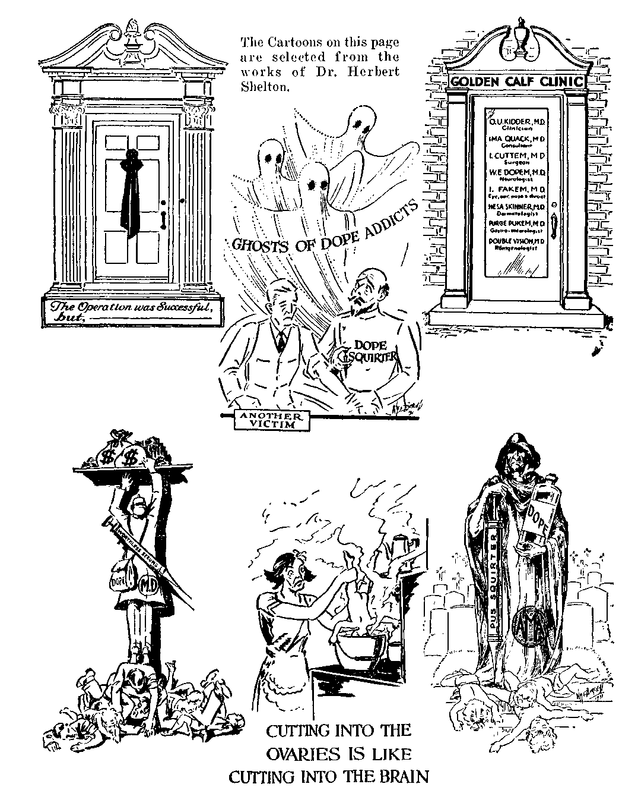

A JOURNAL OF FACT HOPE AND COURAGE
IllllllllSlIlillllllflllllllllllllllllllllllllllllllllllllllllllllilllll
in this issue KINGDOM MESSAGE IN BRITISH EAST AFRICA
EVENTS IN CANADA
WHOLE WHEAT RECIPES CAN GIRLS AFFORD TO SMOKE? NOT TO BLAME FOR THESE A SYMPOSIUM ON MEDICINE PLACING OBEDIENCE ABOVE LOVE OF KINDRED
llllllllllltlllllllllillllllllHIIIIIIIIIIIIIIIIIIIIIIIItlllllllllllllfll
every other WEDNESDAY five cents a copy one dollar a year Canada & Foreign 1.25
Vol. XIII - No. 332
June 8, 1932
CONTENTS
LABOR AND ECONOMICS
Small Users of Electricity Robbed 556 Mellon Feathered Own Nest . . 556 40,000,000 Living Below Standard 557 Wild Boys of New York .... 557 Public Work at Stand Sti’l . . 557 Jonesboro, Arkansas.....557
SOI Businesses Overboard . . . 558 Niles Feeds Many for Little . . 558 Rocky Mount in Splendid Shape 558 Unfilled Orders of Steel Trust . 559 Uncle Sam’s Tax Bill .... 559 Coal Mining Perplexities . . . 559 Bakers Will Help Feed Hungry 559 Forrest City, Arkansas .... 559 Calion’s Municipal Plant . . 560
SOCIAL AND EDUCATIONAL
Not to Blame for These .... 556
2,000 Kidnapings in Two Years . 558
Twelve Safety Commandments . 550
FINANCE—COMMERCE—TRANSPORTATION
Who Got the 168 Pounds’? . . 557
Steamship Fares Reduced . . 558
Panama Canal Tolls Away Down 558 Westinghouse Loss $3,655,659 . 558 Increasing Use of Airways . . . 559 Fest Trains to Chicago . . . 559 Air Transportation in 1931 . . 560 Railroads Gradually Slipping . 560
Steigall and Federal Reserve . 575
POLITICAL—DOMESTIC AND FOREIGN
Newfoundland on Rampage . . . 549
Events in Canada.......550
Johnson Wants Better Government......555
Anti-Injunction Bill Now a Law 555
AGRICULTURE AND HUSBANDRY
Raising Pullets in Alberta . . . 552
SCIENCE AND INVENTION
To Utilize Currents of Upper Air 556
Wingless Flying Machine . . . 558
Uses for Glass Bricks.....559
HOME AND HEALTH
More Whole Wheat Recipes . . 553
Can Girls Afford to Smoke? . . 554
A Symposium on Medicine . . . 561
TRAVEL AND MISCELLANY
Kingdom Message in British East Africa
An Industrious Bank-robbing Firm
RELIGION AND PHILOSOPHY
Why Clergy Are Silent .... 556
Placing Obedience Above Lo\e of Kindred
Published every other Wednesday at 117 Adams Street, Brooklyn, N. Y., L’. S. A., by WOODWORTH, KNORR & MARTIN
Copartners and Proprietors Address: 117 Adams street, Brooklyn, N. Y., U. S. A. CLAYTON J. WOODWORTH . . Editor ROBERT J. MARTIN .. Business Manager NATHAN II. KNORR.. Secretary and Treasurer
Five Cents a Copy—$1.00 a Year Make Remittances to THE GOLDEN AGE Notice to Subscribers: For your own safety, remit by postal or express money order. We do not, as a rule, semi acknowledgment of a renewal or a new subscription. Renewal blank (carrying notice of expiration) is sent with the journal one’month bet ore the subscription expires. Change of address, when requested, may be expected to appear on address label within one month.
Published also in Esperanto, Finnish, German, Japanese, Norwegian, Polish, Swedish.
Offices in Other Countries
British............34 Craven Terrace, London, W. 2, England
Canadian...........40 Irwin Avenue. Toronto 5, Ontario, Canada
Australasian......7 Beresford Rd., Strathfield, N. S. W., Australia
South African.........C> Lelie Street, Cape Town, South Africa
Entered as second-class matter at Brooklyn, N. Y., under the Act of March 3, 1870.
Volume XIII Brooklyn, N. Y., Wednesday, June 8, 1932 Number 332
The Kingdom Message in British East Africa By Robert Nisbet
THE territory now known as British East Africa includes towns with a history dating hack three thousand years, and others which have sprung up in places unvisited by the white man one hundred years ago. The island of Zanzibar has for centuries been the greatest of all centers of the slave trade; while the town of Mombasa, on the mainland, has witnessed many battles and much bloodshed since the beginning of history. The towns inland in Kenya colony, Uganda, and Tanganyika have for the most part been developed in the. present century.
Climatic conditions vary much according to altitude and, according to the East African Fear Boole, can conveniently be divided into two portions, i.e., the Highlands and the Lowlands.
“The Lowlands-” describes that territory below 4,500 feet and includes both the seacoast area and a large tract surrounding Lake Victoria in the interior. In these parts Europeans are advised to exercise care in order to maintain normal health and must go away for periodical changes. Conditions are unsuitable for the rearing of children.
The Highlands are situated between the above-mentioned areas, and conditions there are much less tropical and are generally healthy.
The risk of malaria is everywhere; but it is preventable and curable. The only certain way to prevent malaria is to see that the liver and kidneys are kept in good order and that any constipation be immediately corrected and health maintained generally. It is essential to sleep under mosquito-proof nets and, last but not least, to take not less than five grains of quinine every evening. Malaria fever is caused by the bite from a mosquito carrying the malaria germ. If a sufficiency of quinine is circulating in the blood at the time of the injection the malaria germ is at once destroyed. On the advice of the Society, the writer took five grains and sometimes ten grains of quinine daily and felt no ill effects whatever. Government quinine
is available at cost price at all the post oflices in East Africa.
A topee, or sun helmet, is essential during the day, when it is dangerous to allow the head to be exposed to the sun for even a few minutes. Much has been done of late years to improve health conditions, and if the above precautions are taken, no danger may be anticipated.
Towards the end of August of last year, two of Jehovah's witnesses arrived at Dar es Salaam, the capital of Tanganyika, complete with a generous supply of “ammunition” in the ship's cargo. The testimony work began without delay, and in a fortnight nearly a thousand books and booklets had been distributed. This, of course, raised the ire of the clergy, and a notice was placed on the Catholic church notice hoard calling the attention of all parishioners of Dar es Salaam to No. 1399 of the Canon Law strictly prohibiting to buy, to read, or even only to keep such books in a Catholic home.
Many of the books were left with Europeans, but a goodly number were put in the hands of educated Indians, and also a class of Indians known as Goans, who seemed particularly interested.
Our next port of call was Zanzibar, situated on the island of the same name, twenty miles from the mainland. Zanzibar has been for centuries the largest town in East Africa and has nearly a quarter of a million inhabitants. Only three hundred of these are Europeans, but they are the rulers. The great majority are Swahilis, and there are 45,000 Indians and Arabs. The town is laid out without any plan, and hence the streets twist and turn in every way, so that a stranger soon altogether loses his sense of direction. So narrow are the streets that motor cars can pass only along the main roads, and even then pedestrians must look out for a shop door or some other refuge when one approaches.
The buildings are, in the main, of Arab design ; and the hotel at which we stayed, with its 547 ‘
5-18 heavily studded doors and thick Avails, looked more like a prison than anything else.
Zanzibar supplies practically the whole world with cloves, and the aronia of these is present in most parts of the town.
Our work here was mainly among the Indians and Europeans, and it was among the former that the great majority of the books were placed. It was indeed a privilege to take the message of true freedom to this town which has for long years traded in slaves. The slave trade is now almost at an end, but a far greater freedom awaits not only the natives of Zanzibar, but the peoples of earth.
After a stay of ten days we again boarded a ship, this time bound for Mombasa en route for the Highlands of Kenya. Our three weeks’ work on the coast had been carried out under very hot conditions and we were looking forward to work in a more temperate climate.
At Mombasa we boarded a train in the evening, expecting to reach our destination the next evening. The East African trains are very well equipped for tropical travel. Each carriage is provided with a shutter to keep out the strong rays of the sun, a wire mosquito net, as well as a window. A very comfortable bed is provided for three shillings, and the bedding attendant will spray the compartment on request to destroy mosquitos. A restaurant car is provided on all long distance trains, and good meals are provided.
The train, on leaving Mombasa, traversed a beautiful country among stately cocoanut palms, banana plantations and other tropical fruit. We enjoyed a very comfortable night’s sleep, but shortly after we awoke in the morning the train began to skid and bump about in such a manner 'that we thought a wheel might be off the rails. On putting down the mosquito net a most alarming sight met our eyes. The whole atmosphere for miles around was thick with locusts. There were literally millions of them; and we hurriedly put up the windows, having read somewhere that locusts had stings. These locusts, in five minutes, had the train completely paralyzed. They got onto the rails and made it impossible for the wheels of the engine to grip, hence the violent bumping and. shaking. The train was on a slight incline. We could not go forward; so we were allowed to run back over a mile, and then we tried again. This time the engine reached nearer the top before being
Brooklyn, N. y.
brought to a standstill, and then a number of natives went immediately in front of the locomotive and swept away the locusts as the wheels approached. After a good shaking the top of the hill was reached, and in a short time the train ran out of the swarm. It was indeed fortunate that these locusts did not have stings.
We arrived at our destination in good time and obtained very favorable terms at an inn. Here we were in the midst of a farming district and enjoyed the very best of food obtainable. Fine fresh vegetables, fruit and dairy products in abundance were included in our fare, and our meals were such as could not be obtained in central London at any price.
The witness work continued, sometimes amid great swarms of locusts. One farmer told us that his usual milk supply had been reduced from 120 gallons to 25 gallons a day because the locusts had eaten up his cattle's grazing. His neighboring farmer is in the same plight, but each of them purchased a set of nine of Judge Rutherford’s books, a set of eleven booklets, as well as a year's subscription for The Golden Age. We hope that they have already found out who is responsible for the ravages of the locusts and that they are looking forward to the coming deliverance from this and all of mankind’s troubles.
We much appreciated the temperate climate of this area, due, of course, to its height above sea level. In less than a fortnight, however, it was necessary to go further inland to the lowland area. The first stage of our journey was by train to lake Victoria, where we boarded the S. S. Clement Hill, the lake steamer. Lake Victoria is really an inland sea, 250 miles long and 150 miles wide. The steamer leaves Kisumu every Friday, taking five days to do the. round trip.
After twenty-one hours’ sailing, we reached our next town of working, Kampala, the capital of Uganda (Central Africa). Here the books wore distributed in a most wonderful way, many complete sets of books and booklets, along with Golden Age subscriptions, being received. One gentleman who had seen a friend of his enthusiastically reading Government fifty miles out in the jungle arrived in Kampala one evening determined to find the young men who were distributing these books. He now has all of them and is also a Golden Age subscriber.
The next town we wanted to call on was twen-
ty-five miles farther inland, and since the railway has not penetrated there yet, we had to go by car. After a very successful visit and having reached a point nearly a thousand miles from the coast, we commenced our return journey by another route.
At Jinja a few days were spent and here we had time to visit the magnificent Ripon Falls fed by Lake Victoria and forming the source of the world’s most ancient river, the Nile. No doubt little changed throughout the centuries, the hippos play in the pools close at hand, the crocodiles bask in the sun on the adjoining rocks, and big fish leap in the pools at the. base of the falls. Here was the source of the river whose waters had been the wealth of Egypt and which at one time were turned into blood. The source of the Nile was discovered only in 1860 by Speke, and thereby was solved a mystery which had baffled geographers for untold years.
We continued our journey to the coast, calling on a few towns on the way. The railway line runs along the equator for some distance, but contrary to what one might expect, it was exceedingly cold. The highest station in the British Empire, 9,000 feet above sea level, is situated just a few miles from Equator Station, where the railway crosses the line three times.
A few days later we were at Mombasa, on the coast, where the heat can be described only as terrific. We were forced to cut down the number of books carried in our cases, and even then we could not work long hours. We were continually covered with sweat. Nevertheless a very effective witness was given in that town. Two very well attended lectures were given, the biggest proportion of those present being Goans.
The Goans come from a province of India south of Bombay known as Goa. They are of Portuguese descent and all over East Africa hold good positions in government and other offices. They are a fine, intelligent race of people and always ready to learn something that will better mankind. Their homeland is overrun with Catholic priests, who would like to exercise the same control over the Goans of East Africa. These people, however, are of an inquiring mind and they are fast finding out that there is something fax’ wrong.
After leaving plenty of evidence of our visit to Mombasa we sailed again for a neighboring town along the coast. A short stay there completed our visit to East Africa and we boarded the Llandovery Castle and commenced our three-thousand-mile journey back to Cape Town.
The message of the incoming kingdom of Jehovah has therefore been liberally spread over East and Central Africa. It is a magnificent country; and soon, in the day when nothing shall hurt or destroy in all Jehovah’s holy kingdom, it will be a real happy home for some of earth's resurrected millions.
AS LONG as a family has plenty of means it will get along pretty well, but when funds run low is a time to look for trouble. Newfoundland is hard up. A few months ago it reduced food rations to $1.60 per unit per month. This is about 5c per day per person. Did you ever try living on 5c a day ?
The Newfoundlanders did not take the cut any too well. Nine hundred of them raided a cabinet meeting, wrecked the furniture and broke a picture over the head of the premier. That was in February. It was, so to speak, the preliminary to the real fight.
The real fight came on in April, when the minister of finance and customs got sore and in the House of Assembly publicly asserted that the. premier had falsified minutes of the council in order to manipulate public funds, that one member had converted to his own use the money set apart for food rations for his constituents, and that one member had refused to file income tax returns. The premier tried to whitewash all this, but the Newfoundlanders would not have it.
Ten thousand of them gathered in front of the House of Assembly on April 5. They wanted to drown the premier, which is something no premier likes to have done to him. Then they smashed all the windows in the building, but they did not get the premier, because three clergymen took him under their wing and managed to get him out of the building into an adjoining one, and finally out of the back door of that into an automobile and away. Being a premier these days is almost as trying a job as being a preacher. The poor Newfoundlanders will now have to pay for all the windows they broke. The premier claims he is still in office.
TO HELP the rich to get richer and the poor poorer the government has seen fit to cut all civil servants’ wages 10 percent while interest rates have been allowed to increase. A front page editorial appearing in the Vancouver Sun is worthy of quoting in this connection. It reads:
Premier Bennett has decreased civil servants’ wages 10 percent; he has at the same time increased the rate of interest or rather the wages of money on new dominion loans. And Ottawa, controlling as it does the machinery of credit and the fiscal policy of Canada, pretty well dictates what each province must do.
Last week, the British Columbia government issued $5,000,000 of 6J-percent bonds at $95. This means that the government pays the astounding high rate of 7 percent for its money.
Briefly put, Premier Bennett's policies for Canada are to decrease the wages of work, but to increase the wages of money. Where will such a policy inevitably lead to?
When governments have to pay 7 percent for money, there is something wrong with government, or something wrong with the monetary system. That something wrong, unless quickly corrected, will undermine the value of safety of every dollar’s worth of securities in Canada, and if persisted in would soon wreck our whole capital structure.
Any sensible government knows that when the wages of money get too high and the wages of work get too low, the little man loses. He first loses his money, then loses his job; and then finally the country loses. That is what is happening in Canada today.
Instead of allowing the wages of money to increase from 4 to 5 percent and up to 7 percent, why does our premier not have the moral courage to get up on the floor of parliament and declare that the interest on Canada’s five billions of debt shall be reduced to, say, 4 percent. Four percent interest at today’s commodity prices and today’s wages actually means a greater purchasing power than 5 percent gave two or three years ago. True, the interest on capital must be protected, but no more than the wages of men.
Manifestly the government’s approach to the problem of economy is not in harmony with the opinion of the great body of Canadians. The policy being adopted will only widen the gaps in the economic structure without in any way ameliorating the distress of the individual Canadian.
More and more the evidence is accruing pointing to the fact that the oppressive capitalistic system is a complete failure and bound to crash of its own weight. The intolerable burden heaped upon the people of Saskatchewan is revealed somewhat in the following editorial from the Saskatoon Star-Phoenix:
The people of Saskatchewan were somewhat startled yesterday when they read that their provincial debt had grown to $122,980,022 as compared with $88,000,000 eight months ago. Just how did it happen? The increase is approximately $35,000,000, of which $13,000,000 is the wheat pool guarantee. That means the debt grew roughly $22,000,000 in eight months from other causes. It is a lot of money. On a per capita basis it is more than $133 as compared with, roughly, $100 eight months ago. The announcement made in the house at Regina Monday will cause the people of Saskatchewan to await the budget with the keenest of interest to learn the details of how the expenditures were made. Presumably relief accounts for it.
The total as compared with Saskatchewan’s previous debt seems startlingly large, but set alongside the debt of other provinces it becomes less terrifying. For example, at the end of 1930 British Columbia’s provincial debt was $127,166,161, Alberta’s $113,806,926, and Manitoba’s $90,156,848. Each of those debts has increased in the past year and today is probably still higher than that of Saskatchewan. At that time the B.C. per capita debt amounted to, roughly, $210. In Ontario the per capita debt is as high as in Saskatchewan. Nevertheless, the growth seems excessive and calls for the closest scrutiny by the people of the province. If Mr. Gardiner’s estimate of the interest charges is correct (he places them at $6,500,000 yearly) it is a heavy burden for the already heavily-loaded taxpayers.
The following interesting article, under the caption ‘‘Suicide Race Continues”, is from the Toronto Star:
If the most bitter of Marxian agitators had predicted, three years ago, that the capitalist system of the world would produce certain of the conditions which actually exist at the present time he would have been denounced as a traducer and vilifier who ought to be in jail. No such person could have invented worse accusations three years ago against the world economic system than to have charged that conditions would become as they are.
Every nation has walled itself in behind high tariffs, has stopped buying and is trying to go on selling.
It is not a complete boycott of each other’s goods; not in name, but it is largely that in effect.
Each country frantically tries to export goods, and just as frantically tries to shut out imports—although imports are nothing else but payments for exports. Canada, like all other countries, refuses to ac-
cept payment^ for imports, and her statesmen, like those at Washington, wonder what is wrong with the world. In line with what we have said on this subject before in an article entitled “What a World!” the New Statesman and Nation (Eng.) says:
“The international suicide race continues. Having all decided to keep out each other’s goods and to cut down our purchasing power, the producers of raw materials are everywhere reduced to destroying by one dodge or another the wealth the hungry people of the world are permitted to enjoy. Several recent instances of restriction of output should be welcomed by all orthodox economists. Rubber trees insist on producing rubber in spite of the world slump, and rubber untapped by its owners may be tapped by natives and offered for sale at distressingly low cost. At least one famous rubber company is now reported Io have found a solution for this unfortunate natural abundance. An effective rubber pest has been found and is now, we are told, to be pumped into the plantations. Similarly with regard to the surfeit of cotton. It has been seriously suggested that the planters should drop their campaign against the boll-weevil which has suddenly ceased to be a pest and become ‘the growers’ friend’. An alternative method of destroying crops is to find a new use for them. The Brazilian government is reported to have got tired of burning bags of coffee in a remote valley and is now trying to pulverize the coffee into briquettes, which are to be used as fuel for 1hc state railway engines. If this economic fantasia is played much longer it will not be coffee, only, but the whole economic system, that will go up in smoke.”
What a world! An occasional voice is raised here and there among political leaders in different countries urging a return to good sense. Senator Hull of Tennessee issued a call on Christmas Day “for international action to lower tariff barriers as the first step in solving the debt problem”. He declared that tariff walls had “strangled” trade and it was fatuous to have world commerce hampered and then insist on debt payments. Fatuous it all is—each nation seeking to live alone in its separate cell.
The efficacy of the B. C. G. is challenged, according to a news item appearing in the Toronto Telegram from which we quote:
The efficacy of “B. C. G.” prophylactic vaccination against bovine tuberculosis is seriously challenged by the Pathological Division of the Animal Disease Research Institute in a statement appearing in the annual report of the Federal Department of Agriculture for the fiscal year 1929-30. International significance attaches to the statement owing to the fact that the system of “B. C. G.” vaccination was introduced by the Pasteur Institute of France. Experimental work in Canada has been carried on as a major study since 1924, and while it is not possible as yet to make a final report, the statement adds, “the experimental evidence so far obtained is distinctly unfavorable. The majority of the animals killed at different stages of the investigation have shown evidence of tuberculosis infection to a varying degree; and the animals which appeared to enjoy a temporary resistance to progressive disease arc proving, for the most part. Io be carriers and spreaders of virulent infection. With the knowledge at present available ‘B. C. G.’ vaccination of cattle could not be justified in Canada, and, in fact, is distinctly contraindicated.”
The enormous inequality in the distribution of the growing wealth of the nation is seen in the following Canadian Press report:
Attempts to reduce wages were denounced as a “preposterous experiment” by Tom Moore, president of the Trades and Labor Congress of Canada, addressing members of the international labor movement at the Canadian National Exhibition grounds today.
Until a system of unemployment insurance was placed on the statute books of Canada and industry charged with its cost, 1he masses would always be at the mercy of capital in 1he matter of employment, he said.
“For economic reasons if for no other, employers arc taking pains to protect their workmen from the hazards of machinery. And the same thing would take place if the cost of unemployment insurance were charged against industry as a whole. Industry would not be so ready to cast off the workers in times of depression,” he declared.
Canada’s accumulated wealth had increased $7,-000.000.000 in the past nine years, said Mr. Moore. This represented the sum of $700 for every person in the country. Labor was entitled to some of the money which it helped to create, he said.
The rulers, however, are satisfied to have it so and are determined to stop any effort whatsoever to bring about any change in that connection, as evidenced in the following Canadian Press report from Ottawa:
The Ilouse of Commons set a precedent today when it refused permission to a member to introduce a bill. Government supporters combined to outvote, 72 to 49, Liberals and other groups on a motion to permit J. S. Woodsworth, Labor, 'Winnipeg North-Centre, to introduce a bill to amend the Criminal Code. It was said to be the first time a member had been denied the right to produce legislation on the floor of the house.
The Winnipeg Laborite sought to amend the famous “Section 98” of the code, dealing with unlawfid assemblies. The house since 1926 has passed a similar bill on five different occasions, but each time it met defeat in the senate.
Frayed tempers were in evidence throughout the incident. It was punctuated with interjections flung across the floor, points of order and acrimonious remarks. At one stage Premier R. B. Bennett opposed granting Mr. Woodsworth the opportunity to explain his bill. This brought protests from Robert Gardiner, U. F. A. leader, Ernest LaPointe, who was leading the Liberals at the time, and cries of “Mussolini” from private members on the opposition side.
When Mr. Speaker George Black put the formal molion, “Shall leave be granted?” for the introduction of the Woodsworth bill, Premier Bennett gave an emphatic “No!” The reply was echoed by the government supporters, and before the Laborite had an opportunity to explain his bill, division bells were ringing.
As further evidence the following item under the caption “Canada Makes Progress in Attacks on Workers” is quoted from The Furrow:
The following list will show Canada’s progress in free speech, free assemblage and free expression during the past year:
Arrests of Workers.................
Demonstrations and Hall Meetings Smashed .....
Workers Murdered...................
Fines Paid............................................................... $1,048
Total Sentences............. 119 years 3 months
The “crimes” for which these sentences were inflicted range from attempted murder and inciting to mutiny down through inciting to riot, sedition, sabotage, unlawful assembly, etc., to minor charges such as vagrancy and disturbing the peace. The aim behind them all is to crush the working class of Canada. Let the toilers make of 1932 an answer to vicious attacks of the capitalist tyrants and persecutors! Organization must meet them and defeat their attempts at every point!
Every worker, every poor farmer, must fight the capitalist terror through his own organizations, and join and support the Canadian Labor Defense League, which fights for the victims of these ferocious assaults.
The following is a very interesting item from the editorial columns of the Toronto Globe:
In addition to a touch of the wisdom of Solomon, there appears to be a good deal of human nature in the County Court procedure of his Honor Judge Field. Yesterday this happy combination led to a most unusual occurrence. A Polish laborer sought to recover from a compatriot an old and valued violin which, he claimed, had been left with the defendant for safe-keeping while the owner toiled in a Northern forest. The musician wanted either the violin or $500, while defendant maintained it had been given him in payment of room rent.
So far, little interest. But the Court saw more in the action than appeared on the surface. A sort of musical habeas corpus came into effect, and the violin was produced in court. The plaintiff was ordered to play. Now, an observant judge may note instantly whether or not a violinist is performing on his own familiar instrument. His chin fits snugly to the “rest”, his fingers wander easily to their places along the strings, while his grip of the bow is like the handshake extended to an old friend.
While the Court watched, the plaintiff played. He seemed to know what was expected of him. “The fair land of Poland,” his home, rose before him, and the silent courtroom was flooded with the melodies of a musical people in an older setting. There was no doubting the ownership of that violin. The thrill of music has wrought wonders in this world, and in this case it restored to an expatriated son of Poland his beloved violin.
But what a delightful method of bringing out evidence of ownership!
A FARMER at Three Hills, Alberta, raised twenty-one fine pullets and, the latter part of February, packed them in a ease and hopefully shipped them to Calgary. The freight charge on the whole shipment was $1.50. Other charges were 25c. Eight of the twenty-one pullets were graded as No. 2, and as their combined weight was 30 pounds, and the market was paying 5c per pound, the shipment dragged down a total of $1.50. The remaining thirteen pullets were listed as “No value”.
It thus appears that all the. farmer lost for raising the twenty-one pullets and taking them to the railroad station was 25c, which, per pullet, figures out in cents only 1.190476190476 cents. It is evident that the man did not figure right, for if he had taken four more pullets to the station his loss per pullet would have been only one cent.
On the other hand, if he had taken only ten pullets to the station his loss per pullet would have been two and one-half cents. Now if he had taken 250 pullets to the station his loss per pullet would have been only one-tenth of a cent.
Maybe some kind-hearted farmer will undertake to go over these figures and show us just how this Three Hills pullet raiser should have figured this thing so as to get paid for raising his pullets. Here is a chance now for this California man — what’s his name ? — William A. Vinson, the one who made so much trouble for us in our issue of April 16,1930, to do the handsome thing and clear it all up.
More Whole Wheat Recipes By Mrs. A. M. McCullough (Tennessee)
THERE have been so many articles in The Golden Age about whole wheat flour and how to make the bread, but nothing about using it in other ways than as a cereal, that I thought I would send in some general information and some recipes.
We quit using white flour and granulated sugar ten years ago. We first used whole wheat flour as a cereal (often adding raisins a few minutes before serving) and for making muffins. Then I began experimenting, using my same recipes, but using all whole wheat flour instead of white flour, and brown sugar instead of white sugar.
Whole wheat flour requires more milk than white flour, and less heat, and should be cooked a little longer. Whole wheat flour makes good waffles, pancakes, coffee cake, cookies, pie crust, dumplings, gravy, and cake. If you don’t believe it, just try it. It makes the best fruit cake, and the cake stays moist longer than when made with white flour. If the whole wheat flour is ground coarse, sift out the bran when making pie crust or cake; but don’t throw away the bran: use it when making muffins or mush. If the whole wheat flour is ground fine, don’t sift it for anything.
There is no sense in feeding children cake, bread, cookies, etc., made of white flour and white sugar and then take them to the dentist and doctor all the time, when whole wheat flour and brown sugar make things good to eat. I always use brown sugar when making custard, cocoa, pie or candy, and everyone says “it's good”. Have even used brown sugar for meringue and ice cream. We can learn to like anything; so why not learn to like what is good for us ? White sugar and white bread look sick to mo.
I never have any luck making whole wheat muffins with sour milk; so if anyone has failed making them with sour milk, don’t be discouraged, but try making them with sweet milk.
COOKIES
Two cups whole wheat flour
One cup Quaker Oats
One and half cups brown sugar Three-fourths teaspoon soda One and one-half teaspoon cream of tartar
One-half teaspoon salt
One-half teaspoon cinnamon
One-half cup raisins
Twelve chopped dates
Eight tablespoons Mazola (or equivalent) One egg
One-half cup sweet milk
All measurements level.
Drop spoonfuls on greased tin and bake quickly.
EGG BREAD
One cup whole wheat flour
One cup corn meal
One heaping tablespoon brown sugar
One level teaspoon salt
One level teaspoon soda
One egg
Four tablespoons Mazola (or equivalent) One and one-half cups buttermilk
Mix thoroughly and bake in greased shallow pan or muffin pans in moderate oven.
CUP CAKES
Two cups whole wheat flour
One-half teaspoon salt
One-half teaspoon soda
One teaspoon eream of tartar
One and one-half cups sweet milk
One cup brown sugar
One or two eggs
Eight tablespoons Mazola (or equivalent) One teaspoon vanilla
All measurements level.
Mix flour, salt, soda and cream of tartar together.
Mix milk, sugar, eggs, shortening and vanilla together.
Add dry mixture into the liquid. Fill greased cup cake pans three-fourths full and bake in moderate oven. Or this can be made into a two layer cake. Those who bake with gas may put cakes in cold oven.
COCOANUT CAKE
To the above add one-quarter pound Baker’s dry cocoanut or grated fresh cocoanut.
CHOCOLATE CAKE
To the above recipe add four level tablespoons cocoa or one square of Baker’s bitter chocolate grated and one-third cup more of brown sugar.
COFFEE CAKE
Two cups whole wheat flour
Half cup brown sugar
Half teaspoon salt
Half teaspoon cinnamon
Half teaspoon soda
One teaspoon cream of tartar
Four tablespoons Mazola (or equivalent)
One egg
Three-fourths cup swTeet milk
Mix all together and pour into shallow pan. Then mix and spread over the. top half teaspoon cinnamon, half cup brown sugar and one well beaten egg. Bake in moderate oven twenty or thirty minutes.
All measurements level.
If baking powder is used instead of cream of tartar and soda, use the same amount you have been using with white flour.
(Reprinted from Midwest Free Press)
Dr. C. L. Barber, the eminent physician, says, “Cigarette smoking is spoiling our boys and girls. It takes a boy’s regard for the chastity of his school girl associates. The girls who smoke cigarettes are failing to an alarming degree in the appreciation of their womanhood and sacred chastity.”
“Smoking destroys a woman for a mother. Her baby is poisoned while she is carrying it; the baby is born sick. I have seen ten cases of this sort in one year.”
“A baby born of a cigarette-smoking mother is sick; it is poisoned, and may die within two weeks after birth. The post mortem shows degeneration of the liver, heart and other organs.” “Sixty percent of all babies born from cigarettesmoking mothers die before they are two years of age.”
The early indulgence in tobacco by boys and girls causes premature development of the generative organs, a result not welcomed by thoughtful parents of today; and later it brings about premature inactivity and impotency.
Dr. Samuel A. Brown, dean of Bellevue Hospital, New York city, says that “smoking is more injurious to women than to men”, adding that “women smoke nervously; they cannot smoke moderately. Their nervous condition develops anemia and other ills to which the sex is susceptible. From the standpoint of health, cigarette smoking among women is very objectionable, and on the other hand, it is a let-down of moral standards. Among growing girls, particularly those developing mentally and physically, the habit is extremely dangerous”.
Dr. Lewin says “the sexual power is impaired by smoking and impotence sometimes results”. Dr. Mutrel “found nicotine in both the milk of nursing mothers and in the fluid surrounding the baby before birth”. Dr. Hubert Tidswell says “the delicate germ plasma of the male smoker from which the infant is developed is injured by nicotine”. Dr. I. Miller, of Carlsbad, said “the growing use of tobacco by girls and women foreshadows only evil to the race. When both parents use tobacco it means, in the end, race deterioration, if not worse”.
Dr. Lorand said that “while tobacco produces harmful effects on women who are already completely developed sexually, its injurious action i s even more serious in incompletely developed immature young girls, among whom smoking nowadays is unfortunately becoming more and more prevalent. Indeed, the pernicious influence of tobacco on the organs of young girls is, to my opinion, a matter which the government authorities cannot allow to pass unnoticed”. Dr. Kress says that “if young women take up smoking generally there will come in the future a landslide in physical and moral degeneracy; the race will be doomed”.
Dr. Solly, the famous surgeon of St. 'Thomas Hospital, London, says “tobacco is a stimulus to the generative system, but the stimulating effect is much earlier followed by its depressing action; consequently it has long been known, when used immoderately, to extinguish the sexual appetite and annihilate the reproductive faculty. It is a prolific source of spermatorrhea”.
Dr. Walter Tyrell, of the Royal College of Surgeons, London, says “the tobacco habit is one of those pleasant vices which scourge us, destroying the very principles of manhood. I feel confident that one of the most common, as well as the worst, of its effects is that of weakening and in some eases of destroying the generative functions”.
Dr. R. Hofstatter, of France, says “the use of cigarettes is damaging the facial beauty of women. The features become sharper, the corners of the lips prematurely wrinkle, the lower lip sticks out farther than the upper, and thickens, the lips lose their natural color and become pale, and later they grow a mustache. Twenty-seven percent of the women in hospitals and asylums have both beard and mustache”.
Referring to the losses of $2,000,000,000 sustained by small American investors in bonds of European and South American countries, Senator Hiram Johnson, of California, recently said: “Had I the power I would take this government out of the lethargy that has characterized it. I would awaken it to its responsibilities to its investing public. I would make, it the arbiter in the offering of foreign securities and thus compel it to do that which it has, in the interest of international bankers, so carefully avoided, express itself so that, instead of deceiving the American public, it may enlighten it.”
Anti-Injunction Bill Now a Law
Tp HE anti-injunction bill is now a law. It does away with the yellow dog contract by which, in exchange for work, the workers pledged themselves not to join labor organizations, and the law also forbids United States courts to issue injunctions prohibiting workers from refusing to work, or prohibiting the organization of workers or the conducting of strikes.
Why Clergy Are Silent
(Extract from a personal letter to
By J). H. Sicengel, M. D. (Michigan)
Judge Rutherford)
I was raised on an orthodox milk formula, like the inclosure, diluted with water and sweetened to taste. Which introduces the purpose of this letter.
You often say, “The preachers ought to know; they should have told the people, etc.” The reason they do not know I have set forth above. I suggest that you begin to tell the people that the preachers do not tell them the plain story in the Book because they do not know it. They know all about the Bible, but nothing of its contents. Tell them to ask their preachers how many times they have read the Bible from cover to cover, and not to be content with an evasion. Then they will understand what is meant by ‘the blind leading the blind’.
I smile as I think of the possible reaction.
MY FATHER was a preacher, but in spite of that I became an apostate, for twenty years, long enough to erase the old traditional misinterpretation which you and I know as blasphemy. There came a time when I looked into my father’s eyes and asked a question. He knew an answer must be forthcoming.
“Dad, how many times have you read the Bible from cover to cover?”
“Once, but parts of it many times.”
I asked a friend, a master of arts, so consecrated that he spent most of his adult life as a missionary to Japan, the same question.
“Never from cover to cover, but parts of it many times.”
He was a fine, effective little preacher. I like him.
EARLY everybody has noticed that there is always some wind stirring at high elevations. A German now proposes to take advantage of this fact to produce cheap electric current. If his ideas, which are attracting much attention, are put into effect, great towers will be built reaching 1,000 to 1,400 feet into the air, and upon them will be mounted gigantic windwheels several hundred feet in diameter. It is calculated that these wheels will produce electric power at less than a quarter of a cent per kilowatt hour.
THE small users of electricity are being robbed, and the service charge or ready-to-serve charge is the thief that takes the money. Llewellyn Cooke, trustee of the Power Authority of the State of New York, is authority for the manifestly correct information that the small users of electricity who, all together, buy less than a third of the electric power generated, pay nearly two-thirds of the total revenues. Of the nearly nine billion dollars in revenues collected by the industry in the years 1926-1930 the small lighting customers contributed nearly five and one-half billion dollars, or 61 percent, although they used but 30 percent of the kilowatt hours.
CENTRAL AMERICA, where travel by all other methods is extremely slow and tedious, now has airplane service to all important points. Trips that take weeks by normal methods are accomplished in as many hours through the air. Not long ago an Indian died while at the capital city of Guatemala. His friends desired to have his funeral held in his home town. The only way he could be taken there in any reasonable time was by plane. The plane had no space for caskets, so the dead Indian was helped into a seat and took his last ride sitting bolt upright.
overnor Pinchot, of Pennsylvania, speaking before the City Club of Cleveland charged that Andrew Mellon is directly blamable for the present depression. In bringing about tremendous reductions in income-tax rates for the wealthy, Mr. Mellon effected in his own case a saving in one year of $828,348. Governor Pinchot would like to see America turn from her present rule by Big Business to a new government of the people, by the people, for the people, but it is something he will never see. He will see God’s kingdom instead, and it will be the complete desire of every honest heart.
ALTHOUGH the check from America of $1,100,000 as this year’s contribution to the “propagation of the faith” is 20 percent less than usual, yet the pope is said to be grateful, and in view of the fact that here in America we have 8,300,000 families that are half clad and starving it would seem as though he might well be.
THE Tacoma Times tells of a farmer who sold a 200-pound pig to the packers for $8.36. The next day he went to a retail meat market and was told that for $8.36 they would sell him 32 pounds of pork; and now the farmer is wondering who got the other 168 pounds, and if the people that buy pork know that the farmer gets only 16c out of every dollar they pay for it.
An Industrious Bank-robbing Firm
AN INDUSTRIOUS bank-robbing firm showed its hand in a Pacific Coast city. The robbers entered a five-foot storm drain through a manhole more than a mile distant. Directly in front of the bank they cut a two-foot hole through the six-inch concrete wall of the drain and then burrowed 46 feet underground until they got directly beneath the bank's inner vault. There, they drilled up through a twelve-inch reinforced concrete floor and came out in the exact center of the place they started for. It is believed that the job must have been planned by an architect or structural engineer who had a set of plans of the bank and knew exactly how to take advantage of them.
THE “king of the stowaways” is just back from a free trip to England. He went on board the Olympic as a longshoreman, and with the aid of two suits of clothes passed the time pleasantly enough, part of the time as a sailor and part of the time as a business man. He found an empty cabin and ate with the sailors. At Southampton he walked down the crew’s gangplank, leaped over the wall and started for London, which he reached all right and without spending any money. There he surrendered to the police, as he found he could not get the job he had crossed the ocean to procure. They punished him by locking him up for a month, and then sent him home free.
OWING to unemployment, part-time work, and wage cuts, the American Federation of Labor estimates that 40,000,000 persons in the United States are now living below the minimum standard of health.
Da. John II. Finley, of the New York Times, speaking over the radio, said that in the city of New York alone there are 20,000 boys between 16 and 20 years of age who are living like wild animals. They sleep where, they can and pick up a living as they can.
TN NEW YORK city $224,000,000 of public work is at a standstill. This work includes subways, bridges and tunnels which are badly needed and would give employment to thousands. The big banks refuse to loan the money, claiming that there is no market now for even the best of municipal bonds.
NEW YORK has just completed the holing through of its new water tunnel. The tunnel is 20 miles long, and in no place is less than 020 feet under ground. It is designed to supply Brooklyn, Queens and a part of the Bronx, and to provide an alternate means of supplying New York itself in case of any accident to the old tunnel now in use.
NIGHT riders in Louisiana took a colored man 70 years of age into the woods, stripped him, whipped him, painted his hair green, his chest red and the rest of his body another color. His appearance so affected the poor man's appetite that he was unable to eat and within a week he died of starvation aggravated by fright.
THE Jonesboro (Arkansas) municipal light and water plant has rates which are 20 percent less than any privately owned utility in the state. Last year the net profit of the plant was $44,385, besides a free service to the city totaling $28,000. Out of the 1931 earnings the plant gave the city fire department a new 500-gallon pumping unit.
THE greatest number of business failures in one week ever recorded in the United States was that of 801 business defaults for the week ending January 28, 1932. This was an increase of 59 over the previous week, and 171 over the corresponding week of the previous year.
IN THE effort to offset last year’s losses shipowners of all countries have cut the rates 20 percent, and from that up to 50 percent for the most expensive suites. The net working loss of the Cunard Line last year was $2,100,000. A great increase in foreign travel is hoped for as a result of the new fares.
Henry Ford recently said: “It seems to me a waste of time to have to urge people to buy in this country. That is not the manufacturer's business anyway. His business is to make something so good at a price so low they cannot help buying.” Incidentally, that mere statement, published free of charge, is good advertising; so Ford is a good advertiser anyway.
THE greatest bridge of all, the George Washington bridge, over the Hudson at New York city, has more wire in it than the next seven big bridges of the world put together. Its main span of 3,500 feet is twice the length of the next in size, the Ambassador Bridge, at Detroit. On a warm July day the George Washington bridge is ten feet longer than on a January day.
THE New York Times is authority for the statement that in two years more than 2,000 persons have been abducted for ransom in the United States, of which number one-fifth were in the single state of Illinois. Some wealthy persons now employ detectives to constantly guard them from abduction. By such an act they confess that they have lost all confidence in the government to protect them in their commonest rights. In eight of the states, Alabama, Delaware, Illinois, Kentucky, Missouri, Nebraska, Texas and Virginia, death is the penalty for abduction.
TNTERNATIONAL business has so badly fall--L en off that Panama Canal tolls are the smallest in nine years. Compared with the first nine months of the fiscal year 1930 the corresponding period of the present fiscal year showed 1,403 fewer transits and $4,733,083 less in tolls, about a 25 percent reduction.
NILES, Ohio, with a total population of 16,000, is feeding 4,377 persons, or was at last accounts. Ten tons of cabbage were bought at $20 a ton. Cooked cereal, fresh bread and coffee are served every morning. The main meal menus include ham and cabbage, pork and beans, beef stew, spaghetti and vegetables and are said to cost the city only about lie a meal.
THE Westinghouse Electric and Manufacturing Company sustained a net loss of $3,'655,-659 for the year 1931, compared with a net income of $11,881,705 the previous year. The loss in 1931 was due to a depreciation of $5,671,779 in marketable securities in the huge surplus the 'Westinghouse company holds. Orders received during the year showed a decrease of 24 percent.
Juan de la Cierva, the inventor who brought the autogiro to success, has now invented and has flown a wingless machine small enough to fit into an automobile garage. It can take off from a back yard or a rooftop, climbs vertically, and is practically uncrashable. It is expected that this craft will be able to travel 300 to 400 miles an hour.
Rocky Mount in Splendid Shape
ROCKY MOUNT, KU., is in splendid shape.
It owns and operates its own light, water and gas systems, and each year these industries turn back into the city treasury, over and above the cost of operation and payment of outstanding bonds, a net profit of approximately $150,-000. During the last five years the taxes have been cut almost in half. The city has a cash surplus of $72,149 in the bank; it has never had a bank failure; it is taking good care of its unemployed; it believes in municipal ownership instead of the aberrations of high finance associated with private ownership which has brought America where it now is.
STOCK exchange gambling is not so profitable as it was. In the year 1929 seats in the stock exchange sold for as high as $600,000. A seat was sold in April for $98,000. The total number of seats on the exchange is 1,375.
THE United States Steel Corporation ordinarily has on hand unfilled orders for upwards of five million tons of steel, but at the close of March these unfilled orders amounted to less than two and one-half million tons, and plants were operating at only 22 percent of their capacity.
UNCLE SAM’S tax bill of $14,000,000,000 is one-fifth the national income and amounts to approximately $110 annually for every man, woman and child in the United States, or approximately one day’s labor in every week from every citizen. A short time ago one person in every twenty-two was on the public payroll; now it is one in every eleven.
NEW YORK school teachers have been encouraged to give 5 percent of their wages for relief of the poor. In one school in Queens borough, where twenty-five teachers refused to contribute the 5 percent asked for, they were kept in by the principal for an hour and forty-live minutes until all but three had agreed to the demand of the principal that they contribute. The Queens sewer steals are the most dreadful in the history of government. Many lost their homes because they could not pay the huge assessments.
THE coal mining perplexities of the present trace back to the fact that in America we have too much coal and too many miners. In war times miners worked full time at large wages, but now much of the work is done by machinery, oil and natural gas have cut down the need for coal, and better combustion methods have still further reduced the demand. In the mining regions there are a million children for whom there is no apparent future occupation. Formerly there were opportunities to engage in agriculture, but even these outlets are closed.
IT IS anticipated that one of the principal uses for the new glass bricks will be for the erection of gasoline service stations; they will also be used to fill the areas between windows, and in some factories glass brick roofs may be employed. The bricks are quite large, 1| times the size of common bricks.
FARES on air lines have been dropped to six cents a mile, which is approximately rail plus Pullman fares. A check-up of 784 corporations capitalized at $100,000 or more shows that 477 of these now have executives traveling by air and find the need for air travel increasing. Planes are being speeded up and will soon be on schedules of 140 to 150 miles an hour.
THE bakers will give to the Red Cross the five to ten million pounds of bread and other bakery products per week which they have on hand at the close of the day’s business, and they have also offered to bake bread, without profit, from government wheat now being distributed by the Red Cross. About 90 percent of the bakers in the country are included in these generous offers.
ONE reason why the trains to Chicago can now be speeded up is that traffic is so light. The changing of the time of so many trains disturbs schedules over the entire system. It is believed that by equipping the trains with specially designed pneumatic tires, and streamlining them, it would be possible to reduce the running time between the two cities to eight or nine hours. The new schedules call for eighteen hours for the fastest trains.
FORREST CITY, Arkansas, bought a small electric light and water plant for $11,000 in 1906. Since then, from its earnings, it has expended $155,000 on its plant and now has one that is up-to-date in every respect. The bonded indebtedness is now down to $50,000 and is being paid off at the rate of $12,500 a year. Last year the plant gave the. city $6,000 worth of free service, took care of its bonded obligations, and returned $22,000 in profits to the city treasury.
A IR mails to South America are light. In a recent month there was a total of only 334 pounds of mail carried on the air route via Dutch Guiana and Brazil to Buenos Aires. The Government paid the. Pan-American airways $79,140 for this service, or about $237 per pound. While this seems like a high cost per letter, yet we believe the money was well spent.
Much Unemployment in Detroit
AN EDITORIAL writer for the New York
Times, writing from Detroit about the middle of March, stated: “If 50,000 additional men were put to work in Detroit factories tomorrow there would not be as many men working as were employed a year ago. Not half the men who were employed in 1929 are working today, yet most of them and their families are still in Detroit, hoping against hope and leading a hand-to-mouth existence.”
Galion’s Municipal Plant
THE Galion (Ohio) municipal electric light plant, makes a minimum charge to its customers of 50c a month. The rate for the first 100 kilowatt hours is 4|c; the largest users get their current at 1c. From 1929 to 1931 more than $230,000 was taken from surplus and spent for improvements and plant extension. On February 1 of this year the city had a balance of $193,562.50 and laughs at the critics of municipal electric plants.
Twelve Safety Commandments
THE president of the Studebaker company gives twelve safety commandments:
1. Don’t pass on hills or blind curves — you might just as well drive blindfolded. 2. Don’t challenge the right of way — if in doubt take no chances. 3. Don’t fail to signal all turns — the fellow behind is no mind reader. 4. Don't cut corners — that’s the other fellow’s territory and he might claim it. 5. Don’t cut in sharply after passing — the driver behind hates 1 he ditch as much as you do. 6. Don’t cut out suddenly from behind a parked car — it may be both the start and finish of your trip. 7. Don’t weave all over the highway — that’s why there’s a center line. 8. Don’t attempt to beat a stoplight — it might beat you. 9. Don’t come to sudden stops without signaling — rear end crashes are costly. 10. Don’t lag in traffic— you have no right to delay those behind. 11. Don’t take a chance on faulty brakes or tires — it’s a saving you’ll regret in the long run. 12. Don’t be reckless at any time — you jeopardize not only your own life, but the other fellow’s as well.
PASSENGERS over American lines in 1931 totaled 457,340, an increase of 22 percent over the previous year. Express shipments showed an increase of 118.9 percent for the same period. The miles flown totaled 41,416,688, which was an increase of 33 percent over 1930. The increase in pounds of air mail carried was 10 percent. These increases in air transportation in the face of the depression existing in other lines are very noteworthy.
THE railroads are gradually slipping, and there seems to be no help for it. Some of the railroad systems that operated at a loss in the month of February are the Alabama Great Southern, the Mobile & Ohio, the Wabash, the Ann Arbor, the Baltimore & Ohio, the Boston & Maine, the Clinchfield, the Chicago, Milwaukee & St. Paul, the Great Northern, the International Great Northern, the Pere Marquette, and the Texas Pacific. Buses are gradually taking ovei- the smaller lines.
IF THE Pullman company wants to get back its lost business it will have to reduce its rates to what they were before the surcharges were added. The people simply will not pay the exorbitant prices now charged for a night’s sleep, and are going by plane or bus or any way to avoid them. The Pullman company tried to recoup their losses recently by asking for an extra charge for the second passenger carried in a berth, but the Interstate Commerce Commission refused to give them the right to make the extra charge.
Chipper Talk Won’t Change Conditions
A CIRCULAR letter of the stock exchange ft- firm Babcock, Ruston & Company, Chicago, says, very truthfully: “Talking about a trade betterment is not going to bring it, and with 31 months of bear market and 33 months of business recession behind us we should be sufficiently steeped in realism and a willingness to appropriate realities, not to chase after rainbows and indulge in phantom hopes. It has been appreciated for months that no major depression in the history of the United States ever ended in the spring. We. have never believed that this depression, the biggest in the last 100 years, would end this spring.”
CAUGHT like rats in a trap, one of our most painful lessons to learn is that we are headed for the tomb and, do what we will, we can stave, it off only a few years. If we look to the Scriptures on what to do to help ourselves to a fair enjoyment of good health while we are here, we do not get much information.
We can see that man was primarily a fruitarian, and may judge it would be best for him if he would adhere to that diet; but few do. Later he was permitted to eat flesh foods; and most of us yield, knowing we are here for only a little while anyway, and it won’t make much difference, in the final analysis.
Our Savior helps us to the information that “they that be whole need not a physician, but they that are sick [do need one]” (Matt. 9:12), and completely balances it with the account, in Mark 5:26, of the poor woman that “had suffered at the hands of many physicians, and had spent all that she had, and was nothing bettered, but rather grew worse’.
We see that the earth produces ‘herbs for the service of man’ (Ps. 104:14); but the herbs there referred to certainly include the common vegetables and may be limited to them. Sores were mollified with ointment (Isa. 1:6), but we are not sure what was in the ointment. Fig poultices were used for boils (2 Ki. 20:7), and wounds were dressed by pouring in oil and wine. (Luke 10: 34). And that is about as far as the Scriptures take us.
At this point begins our argument as to what kind of physician we shall have, and our allopathic, homeopathic, eclectic, hydropathic, naturopathic, osteopathic and chiropractic friends modestly step out into the limelight and tell us with one accord that if we want relief we shall come their way. Not being able to go seven ways at once, we have to make a choice; and immediately the other six become mortal enemies. So far, so good.
Osteopathy and chiropractic produce such immediately beneficial results that we hesitate to make a final choice between them, and so we gravitate from one to the other and wait for the perfect day when we shall not need either. It is fun to hear them talk about each other and about the M.D.’s.
In trying to crowd the chiropractors off the map the. M.D.’s have made the worst possible mistake. The chiropractors are a bright lot of men and women; they have truth on their side, and they are getting results, and know it, and hence they feel a peculiar joy in scalping the M.D.’s who have so often manifested intolerance by putting the chiros in jail on the trumped-up charge of practicing medicine without a license (which they refuse to grant).
Not long ago we got hold of a little book put out by the chiropractors which contains numerous statements by the M.D.’s. It makes mighty interesting reading. We have rearranged it, and present the bulk of it herewith. It gives the statements of 104 regular M.D’s as to what they think about medicine. At the conclusion of the quotation from each doctor appears a number to correspond with his name in the list of physicians with which the article ends.
Oh yes, and to whet the appetite for what follows, we give the Chiropractor’s catechism on what the M.D.’s think about consumption or tuberculosis. It sounds a little uncertain, but may be O.K. if well shaken before and after taking.
"Consumption is caused by Peruvian bark.’’—Dr. Stabi, M.D.
"Peruvian bark is an effectual cure for consumption.”—Dr. Martin, M.D.
"Vinegar is a fine preventive of consumption.”—-Dr. Galen, M.D.
"Consumption is caused by young people taking vinegar to prevent obesity.”—Dr. Dissault, M.D.
"Foxglove is a specific in consumption.”—Dr. Beddoes, M.D.
"Foxglove is more injurious in consumption than beneficial.”—Dr. Pan, M.D.
"Consumption is only curable bjr mercury.”—Dr. Brillonet, M.D.
"Consumption is due to the use of mercury.”— Boardman Reed, M.D.
"Consumption should be treated by bleeding, cooling medicines and starvation.”—Benj. Rush, M.D,, Medical Author and Critic.
"Consumption should be treated by tonic, stimulating medicines and diet.”—Dr. Salvadore, M.D.
"Evidence on which contagiousness of tuberculosis rests is so frail that it would be scorned by any impartial jnrv of ordinary intelligence.”—Thos. J. Mays, M.D., Philadelphia, Pa.
"Tuberculosis is no more infectious than corns.”— J. II. Hodge, M.D.
And now for the main presentation, which may seem a trifle monotonous to anybody else, but is sweetest music to an osteopath, a naturopath, or a chiropractor:
GG1
QOLDEN AQE
“Medicine is a science of guessing.” 1
“Drugs do not cure disease. The particular symptoms may be quieted by a narcotic or some other drug, but the disease itself remains.”’
“All medical legislation is of itself in the nature of class legislation, asked for by the few and not by the masses.” “Indian tribes, with their limited amount of learning and intelligence, successfully healed themselves for ages past. Then, surely, the whites of this day, with their far more learning and intelligence, are capable of selecting the safest and best methods of healing and, therefore, should not be prevented from exercising this privilege by state medical laws created for the sole benefit of a class of physicians who follow the dispensary, as aforesaid, and attempt to cure one disease by producing another. ’ ’3
“I heard an eye specialist (now dead) make the statement that he had destroyed the sight of a basketful of eyes before he learned to operate successfully for cataract.” “If there is a fact known to scientific medicine, that fact is that major operations on the pelvic organs of women with, or with a tendency to, insanity, only aggravates the condition, and yet there is scarcely a female brought before the lunacy commission of Dallas, Tex., of which the writer is a member, who has not had from one to five mutilating operations performed on her.” “Nerve exhaustion from shock, chronic invalidism, irremediable and constant pain from adhesion—these sequels are common among the patients of the greatest physicians living.” “The last few years there has been welded into other abuses the custom of sending every sick man, woman and child to some sanitarium. This paper could not afford me the space necessary to record how this modern graft operates.” “A doctor dropped a tube in the throat of an only child who was dying of diphtheria. The momentary relief was so great that his father was delighted with the idea that he would get well. The doctor knew he would die, but taking advantage of the psychological moment he struck the father for a fee of $1,000 and got away with it (the usual charge is $25 for this simple operation). I heard this gentleman talk about the medical profession with tears in his eyes. Great is humbuggcry. ” “Medical fads of the day—Wasserman’s test reaction for the detection of specific disease, Salvarsan—and high blood pressure, they have all added their numbers to the ranks of the insane and hurried them into the bughouse.” “Seventy-five percent of all drug addicts were so made by doctors. ’ ’4
‘ ‘ Operations for appendicitis are unnecessary. ’ ’5
“Medicine is a shapeless collection of incoherent ideas. ’ ’6
“I sincerely believe that the unbiased opinion of most medical men of sound mind and long medical experience is that the amount of death and disaster in the world would be less than it now is if all disease were left to itself. ’ ’1
“Drugs, with the exception of two, are valueless as cures. ’ ’8
“There is not a single disease for which we have an absolute specific. ’ ’ ’
“The single, uncombined, different and confessed poisons in daily use by the dominant school of medicine numbers one hundred and seven. ’ ’10
“Half the time the doctors are wrong.”11
“Of all known sciences, none has been more unstable, confused and contradictor}7 in doctrine than medicine.” 13
“Surgery as a cure for cancer has been tried in the balance and found wanting. The death rate has increased lamentably of late years. ’ ’13
“Nine-tenths of physicians make the best guess of which they are capable and prescribe accordingly.” “The fact that a doctor has to make a living out of disease, handicaps his eagerness to diminish and prevent disease in his vicinity.” “If 90% of our patients would recover anyhow without any medication or in spite of our improper treatment, are we not quacks to the extent of 90% ? ” “ Legalized physicians are treating at least 50% of their patients without knowing what is the matter with them. The unlicensed man would probably not do much worse.” “Fifty percent of diagnoses are wrong.” “If we arrive at a correct diagnosis in only 50% are we not quacks to the extent of the other 50% in diagnosing and giving treatment?” “A quack is one who leads his patients to believe he has medical resources which, in fact, he does not possess; who fosters in them all sorts of superstition about drugs, plasters, electricity, etc.”14
“How much medication really produces any beneficial results, and what percentage of our methods really benefit our patients in the present chaotic state of therapeutics—until we can answer those questions, how can we say that non-medical forms of treatment with which we are unfamiliar do less good, do more harm, are neither beneficial nor harmless as compared with the methods we use. ” “ Every educated physician knows that most diseases are not appreciably helped by drugs.” “Occasionally a patient comes to me after having gone through the hands of other physicians, some of whom have been of the highest standing, men who would know whether or not a patient is really diseased. In many such cases it has been obvious to me that the patient is sound and well and that these other physicians must have known this.” “It is only because we conceal from the patient our real intention and deceive him into believing that we have medical resources, which in fact we do not possess, that he takes the medicine at all.” “In diagnosis, the private practitioner cannot say ‘I don’t know’ without incurring an economic risk, which he is under very strong pressure to avoid.” “If a patient comes to me with something that does not lie within my special line, I do everything that every practitioner could do: make the best guess he can. That is what private practitioners arc paid for. That is what the average citizen gets for his money.” ‘‘Many who hold themselves out as physicians have poor training, have poor knowledge to judge, and are bunglers.” “Wc physicians are like the old-time shoemakers. We don’t specialize. When you see a doctor put up a shingle, 'Physician & Surgeon,’ you have Hie truth that he is neither.” 14
‘‘When a surgeon has to decide the question of an operation, his task is made harder by the introduction of an irrelevant and most disconcerting factor, viz., 1lie prospective fee. If he decides that the patient needs 1he operation, that means $50, $100, $1,000 or more for him. If he decides that no operation should be made, there is no fee for him. The patient wants a perfectly unbiased judgment; he is extraordinarily fortunate if he gets it.” “The young surgeon is not Io be trusted, because his opinion as to whether an operation is advisable or not is biased by the consideration of the fee in the ease of operating as against the fee if he does not operate.” “The world’s famous eiinic of Mayo Bros, at Rochester, Minn., employs a business agent who has correspondents in all parts of 11m country and whose object is to discover approximately the income of every patient visiting that clinic. Prom the figures thus obtained, the fee can be calculated upon a percentage system. One hears rumors that the gross receipts of the eiinic are in the vicinity of $1,000,000 a year.” “There is no good reason to suppose that the physicians at the Mayo Clinic, Rochester, Minn., had any very extremely scientific endowment to start with.”14
“Hundreds of operations for stasis, resulting in horrible, irremediable pathology, as illustrated by Dr. James T. Case, in the Journal of the American Medical Association, Nov. 16, 1915, a condition that can easily be permanently relieved by simply judicious treatment, if you know how, have been perpetrated by men considered the best surgeons in their communities, to Ihe everlasting regret of the patient. Is it right to legalize such stunts as that?” “If medicine is to remain a profession this competition for money must cease.” “There arc 1oo many surgical operations performed by men who have not the skill to make the operation of benefit to the patient, with the result that many necessary operations are not done, because so many people have come to distrust all or nearly all surgeons.” “We should avoid the scandals of inhuman charges and of indecent exploitation of suffering humanity by the sharks of the profession, and we might well avoid the tragedy by which the impecunious young doctor must select general practice, for which he is ill equipped because he can not afford to devote himself to the pursuit of pure •science, for which he was best fitted.” “If a patient refuses an operation, he should not be denied any other form of treatment he may desire. There is just about as much justice in a law outlining the definite form of treatment one shall employ for his own person as there was in the old one compelling a certain religious belief for the salvation of the soul.”14
“A patient of mine could eat but little, he failed to improve on diet and usual remedies; he adopted one of the recent cults. In a very short time he was able to eat anything, apparently is perfectly well and is at work, lie had been treated by other physicians for the same condition during Ihe past four years with no better results than I obtained.” “Any suffering person who has tried out a diagnosis of treatment from regulars with little or no effects, should be at liberty to have other forms of treatment.” “In the present ignorant, less than fifty percent efficient condition of the medical profession, we are in very poor position to assume the right to prohibit anything.” “The persistent trend of medical legislation towards 1hc end compulsion, will eventually result in a revolution similar to that which took place against compulsory religious belief.” “Personally I cannot construct any theory of State medicine in a democracy which does not appear to me to be likely to ruin not only the democracy, but medicine.” “So long as medical science is no science at all, but merely a hodge-podge, 50-percent efficient, wc have no right to assume that because wc cannot understand how changes come about in a patient, it is not done and cannot be done.” 14
“A patient whom I did not treat, but know very well, had diagnosis by good men in the city of Portland for tuberculosis of the bowel and was sent home to die. He took up with a cult and writes me that lie is absolutely well, having gained 30 pounds or more.” “The medical profession possesses the one great fault of arrogating to itself all knowledge of therapeutic measures, while as a matter of fact they are floundering in their own quagmire of therapeutic uncertainty and yet denying any virtue, whatever in other forms of treatment they have not investigated and are entirely ignorant of.” “When people we can do no good are at last relieved of suffering at the hands of irregulars, no one can blame them for adopting them, ami Io my notion any law that would prevent the sufferer from being permitted to receive such relief would be pernicious and certainly not for the good of humanity.” “What a patient wants is results. If the medical doctor cannot give them Io him, although he learnedly tell him what is the matter with him, and an irregular can, just so long those methods of treatments are going to have followers, and rightly, too.” “If I were a patient in a predicament, I certainly would want Ihe mode of treatment that offered any prospect of relief or recovery.” 14
“When 1he people see medical men persistently spending millions of dollars of public funds in health boards in attempts to establish a medical oligarchy, it is only natural for them to conclude to thoroughly investigate whether or not doctors give value received for their money.” 15
“Thousands of desperate cases of chronic diseases could be easily cured if someone had sense enough to tell the poor victims to quit taking medicine.” “There is no known cure for diphtheria. Anti-toxin does not cure. Why deny it ? It killed my only son. I have known many others.” “Any doctor who persuades people into taking no drags will soon make a reputation of curing chronic diseases.” “No one can entirely recover health while taking medicine.” “What people need is to quit taking medicine.” “If I take medicine for my liver, it is probably doing harm to my stomach and other organs.” llJ
“All our curative agents are poisons, for they diminish the patient’s vitality.” “Physicians have hurried thousands to their graves.”17
“Prevailing modes of medical practice arc productive of vastly more evil than good.” 18
“In consequence of their ignorance or indifference of the possibilities of the Roentgen rays for healing, hundreds of people were disfigured for life or killed by the great number of physicians using these machines, and I regard the sober truth when I aver that not one in ten of the owners could distinguish the difference between a static spark and Halley’s Comet, or a Roentgen ray from Bill Ray.” 19
“The only use medical students seem to make of books is to obtain by study the knowledge which is recorded in their pages—not to expand the knowledge they have acquired by the study of nature. For that they seem to have little enthusiasm, little curiosity to know.” 20
“Errors of diagnosis are due to incorrect instruction in medical colleges and entire lack of adaptation of the doctor to the medical profession. ” 21
“Medicine vendors know but little of the human organism and know a great deal less of the medicines they impose upon their helpless victims.”22
“ ‘Advanced medical knowledge’ is a term employed to cover ignorance.”23
“Statistics of deaths from hydrophobia show that they have increased in every country where Pasteur Institutes have been widely exploited.”24
“The whole germ proposition is a silly, senseless fable.” “The average medical mind is so dwarfed by superstitions that it cannot comprehend a simple law of nature anyhow.” “Doctors of today are not allowed to think for themselves—they must follow the medical priests and swallow the American Medical Association dope or they will be branded heretics and be burned at the stake of medical ethics.”25
“A third of a century of actual medical experience teaches me that it is impossible to harmonize materia medica and common sense.” “I know from personal experience drugs do not cure disease. They mask symptoms and give temporary relief, but that is all they can do.” “Poisonous drugs poison the human system, and weak drugs have no effect upon it.” “Few medical physicians have the moral courage to brave the ostracisms of their fellows; so while privately they will send members of their family to a chiropractor’ or go themselves when sick, publicly they openly condemn them or maintain discreet silence.” 20
“In true angina pectoris and typhoid fever, with temperature of 101J degrees, I got convalescence more rapidlj’ by chiropractic adjustments than I could have obtained by using drugs.” “I have by chiropractic adjustments obtained wonderful results in acute and chronic appendicitis, rheumatism, constipation, stomach and kidney trouble, goiter, headache and the pelvic diseases peculiar to women.” “If I were confined wholly to one branch of therapeutics, I would choose chiropractic unhesitatingly. I hesitate to state the number of women I have helped to health and the evasion of the surgeon's knife through chiropractic adjustments alone.”27
“There arc many chiropractors who in certain kinds of cases, I am convinced, do vastly more good than the most highly educated physician.” “I believe that in time chiropractic will be taught in all medical colleges. ’} 28
“If the medical men would adopt chiropractic they would have an unequaled health system in their hands.” “I am getting good results through chiropractic adjustments in Ihc largest part of my work, which are cases referred from medical men.”29
“Medicine is not a science.” 30
“Fumigation, time-honored as a preventive of communicable diseases, is well nigh useless in accomplishing that result.” 31
“A conscientious growing suspicion that medicine is more speculative than exact as a science caused me to abandon the practice.” “When one thinks of the tangent the profession of medicine has gone off on with its auto-sero therapy to opsonian indexes and serum ad-nauseams, one really wonders how two doctors of medicine can meet without laughing in each other’s face.” “I saw my entire family taken away with diphtheria while under the care of medical physicians.” “Where death results from medical treatment, no blame ever attaches to the medical doctor, because he has the impregnable wall of medical prestige to hide behind.” “I have seen a beautiful girl of eighteen years die with all the symptoms of morphine poisoning after having been given as medicine one-eighth grain of morphine sulf.” “A young lady whom I know was injured in an automobile accident. Consulting surgeons and specialists passed her along from one to another-—because her father was rich— and did her no good. I saw her later—still in her invalid chair—restored to health by a chiropractor. ’ ’32
“Ninety-nine out of every hundred medical facts are medical lies, and medical doctrines are for the most part stark, staring nonsense.”33
“An army of victims arc rushed to their graves by incompetent pretending doctors.’’34
“There is scarcely a sound physiological principle among us.” 35
“Medicine is so unsatisfactory to tie to if one is conscientious in trying to deliver aid to nature. ’ ’36
“I have had sixteen years’ experience in the practice of medicine. I can say that there is no connection whatever between medicine and chiropractic.” “Medicine is a great big guess.” “After my observations of the last few years, I am led to recommend very highly that people who are not in good health see a chiropractor and take adjustments.”37
“There is no potency in the doctor, his medicine or treatment; but rather in the forces that reside in Ihc patient.” “Physicians prescribe cathartics that destroy sensibilities of the nerves.” “Narcotics are given by physicians for intestinal indigestion that destroy the sensitive nerve endings of the bowel.” * ‘ A case of goiter that measured 25 inches in circumference of the neck, in a few weeks of chiropractic adjustments was reduced to 19£ inches.” “Medicine has appealed to the strong arm of the law to protect it against irregulars. When the people see and learn by experience that the man on the outside is the one who does things, they will break down the medical fences in order to get to that man.” 33
“The American people are opposed to the policy of extending special privileges of State Medicine to any school. ’ ’3£>
“Medicine is a colossal system of self-deception.” 40
“There is not a single medicine in all the world which does not carry harm in its molecules.” “Medicine is cranky and irrational, more dangerous than dynamite.” 41
“There are two drugs which, from the very beginning of history, have had an enormous reputation as stimulants, strengtheners, cures, alcohol and opium, because they have the fatal gift of deadening pain and giving relief to all who suffer.” “The relief of pain is the most highly appreciated blessing; consequently, nine-tenths of all soothing syrups and mother’s friends contain opium or other narcotics, two-thirds of the consumption cures contain either alcohol or opium to buoy up the pale-faced victims with a delusive sense of improvements.” “Most of the colic cures and medicines for summer sickness contain some fairly powerful narcotic.” “The large majority of the asthma, hay fever and catarrh cures contain opium or cocaine.” “The most popular cough mixtures and the famous cough drops contain traces of opium.” “Nearly four-fifths of all the bottles or boxes of patent medicines and others sold over the counter to all comers contain either alcohol or opium. ’ ’42
“Our miscalled ‘remedies’ are absolutely injurious to our patients.” 43
“Were there no physicians on the face of the earth, there would be less sickness and less mortality than now prevails. ’ ’44
“In spite of allopathic medicines, all the chronic diseases of the last hundred years are with us.” “Today we usher a new discovery into the world with the blare of trumpets. Tomorrow, we preach its funeral with a new idea. The public believes what it secs, and when it sees us constantly deserting our own colors it has no faith in the opinions we hold or the remedies we use.” “When we drink our own poisons and cut out our own vitals, we will have the right to ask the public to follow us in blind confidence.” “We are asking the public to believe in what we do not believe in ourselves. We are asking them to take medicines we will not take, and to submit to operations which we will not permit ourselves.” “The people will give you all the medical law that you ask for, but it will only be giving you a little more rope to hang yourself with.” “From the time of the first medical law, drugless healing has been going ahead by leaps and bounds.”45
“Ninety-nine percent of all the cocaine and morphine manufactured in this country is used by persons who have formed the drug habit through physicians’ prescriptions.” “Those using cocaine, morphine and opium are short-lived, most of them dying within ten years after contracting the habit.” “Why should a patient swallow a poison because he is ill, or take that which would make a well man sick?” “Already the number of preparations devised by the chemist for the drug treatment of disease exceeds 75,000 different ‘remedies’. The array of material from which to select is so great as to constitute a perpetual riddle in medicine.” “Non-reliance upon drug therapeutics for the cure of the sick is complete so far as I am concerned, much to my own satisfaction and gain to the patients.” 40
“The doctor does more mischief than the malady.” 47
“Medicines are instruments of death in physicians’ hands.” “The public would be infinitely better off without professed drug physicians. ”48
“Chemical drugs increase and complicate conditions. ’ ’49
‘ ‘ Clinical records show that there is hardly a recognized form of disease that cannot successfully be ‘treated’ by chiropractic adjustments.” 50
“It is impossible to harmonize materia medica and common sense.” “Even advanced medical students will fail to comprehend the subject of medicine in its present state of scientific insanity.” “The medical profession has suffered in the eyes of the people from the days of Pasteur, 1885, who proposed a serum for the supposed disease of hydrophobia in man.” “There has been a rapid growth of serums and vaccines, vivisection and quarantine; there has also been a loss of truthfulness and prestige for the medical profession.” 51
“I thoroughly believe that progress in the art of healing—not by any means an exact science—is best conserved by giving people the utmost freedom to choose whom they please to treat them when they are ill.”52
“The greater part of all chronic diseases is created through suppression of acute diseases by drug poisons.” ‘‘Dr. Osler, in his ‘Medicine’, in Encyclopedia Americana, declares the utter uselessness of drug treatments and endorses drugless healing.” 53
‘‘We medical men are following the wrong course in our investigations, acting without knowing the why and wherefore of the trouble.” 54
“Improper medication is the cause of our chronic sufferers of today.” 55
“There is no such thing as a medical science.” “Doctors do mighty little—when they don't do harm.” 50
“This is an age in which knowledge has been put into the possession of the common people. If we do not keep abreast of the times, civilization will pass by and leave us in an atmosphere of scorn.”57
“There is no reason why the general practitioner should not avail himself of . . , manipulative treatment as is of proved efficacy and success. . . . The profession of medicine has neglected an opportunity, and the public has been the arbiter. ... I believe the next decade will witness one of two conditions—perhaps both: The osteopathic school will become in reality a college of medicine and surgery, oi' the regular medical college will include mechano-therapy in its curriculum.” 58
“Probably seventy-five percent of the people who come to us would get well in spite of what we do for them.”59
“The drugless healer is one of the best things that has come into the life of the present.” 60
“The senseless, ruthless destruction of the tonsils is becoming each day a greater menace to the public good.” “The function of the tonsils is unknown and, therefore, these organs should not be removed. ’ ’61
“The medical profession are endeavoring to establish State medicine. State medicine is no more to be tolerated by the people than is State religion.” “Our school children arc being used as revenue producers by political doctors and political educators.” 02
“It is a burning disgrace to our profession that six of Omaha’s physicians in a year have been operated on for appendicitis. That they did not prevent it by proper care of themselves is a fine advertisement of their inefficiency.” “The New York coroner found in forty-two consecutive cases of appendicitis operations that the appendix had been healthy, sound and normal.”63
“Back of disease lies a cause, and the cause no drug can reach,” “We know there is a cause of disease, but we do not work on it. ’ ’64
“The ultimate mortality of cancer of the breast is just as bad today as it was thirty-five years ago, if not worse than it was then.”65
“A drug or substance can never be called a healer of disease.” “A drug is never a help in disease.”
“We medical men know little or nothing of the real action of di-ugs. ’ ’ 67
“Correct diagnosis in many important diseases falls below fifty percent in recognition; and in some, below twenty-five percent.” 68
“A physician for a number of years, I have spent ail my time rebutting testimonies from surgeons, which arc mere speculation and do more harm than good.” “Lip to the present time the great majority of the medical profession have kept blinders on the laity. There now is a widespread and rapidly spreading dread of the blood-poisoning treatment; state after state is abolishing compulsion in this connection.” “Don't be afraid of germs. We are getting germ crazy.” “The cause of disease is in the poisonous drugs physicians supcrstitiously give to effect a cure. ’ ’69
“As we place more confidence in nature and less in the preparations of the apothecary, mortality diminishes.” 70
“Physicians are not in the class that will be permitted to pass final judgment on the practice of the healing art.” 71
“The chiropractor uses nothing but his bare hands to realign bones that are misplaced in the spine, thus releasing pressure of harder substances from the nerve trunk to restore normal tension to individual nene fibers. The application of such adjustments is practically painless and leaves no ill effect with the patient.”72
“Drugs do cure one disease by producing another. ’ ’73
“Regular medicine rails at the 'irregulars’ and brands all such ‘quacks’. But when disease enters the physician’s own home; when the best efforts of which he is capable, fail; when willing colleagues of superior skill and sound judgment can accomplish no more; when the well recognized medical and surgical domain offers no hope—then help from any source, orthodox or heterodox, is acceptable.”74
“The sufferer would be safer without a physician than with one.” 75
“A very large proportion of failures in medical treatment is due to wrong diagnoses. Other failures result from remedies continued too long and in too large doses.” 76
“No science is so full of fallacies, errors, illusions and lies as the school of medicine.” 77
“The art of drug therapeutics is a combination of science, luck and humbug.”78
“The first duty of a physician is to instruct the people in the laws of health and thus prevent disease. The tendency has ever been toward a conspiracy of mystery, humbug and silence.” “The rank and file of medicine are like sheep led astray.” “Physicians have bitterly opposed every real and scientific help in the art of medicine, filled the world with incurable invalids; disgusted all sensible and thoughtful men by their fallacies and humbug.” “I charge that physicians have encouraged superstition and humbug by the germ theory of disease.” “The past fifty years have been rife in medical delusions.” “Germs arc the result, not the cause of disease. They are scavengers; their legitimate work is to clean out the sewers of our bodies. They arc beneficial helpers to an important end.” 70
“The ignorance of physicians of the effect of drugs is closely related to their lack of knowledge of the effect of poisons in general. Very few physicians are able to recognize a case of poisoning at once.” “Doctors prescribe digitalis in every case of heart trouble, allhough it should be used only at a certain stage of heart disease and at other times it is absolutely dangerous.” 80
“We study false facts and false theories.” “We have multiplied diseases and increased fatalities.” “Dissections daily convince us of our ignorance of disease and cause us to blush at our prescription.” “The Constitution of this republic should make special provision for medical freedom. To restrict the art of healing to one class will constitute the bastile of medical science. All such laws are un-American and despotic.” 81
“I have had about as much success with drugs and medicines as almost any other medical man and I gradually lost confidence in them. I have been led to see that in my medical education I have been educated in the art of healing with the cart before the horse.” “Chiropractors are obtaining results that I could not have obtained with medicine or surgery.”82
“Superstition has always been propagated by the doctors.”SJ
“The son of a medical doctor, I was educated for the same vocation in life. After nine years’ experience in medicine, I discovered through medical advice that I had sugar diabetes. A friend advised a course of chiropractic adjustments which fully restored me to health again, without any return of the trouble since, and that is nearly seven years ago.” 81
“The medical profession is overcrowded with the rank output of commercial medical schools.” “Doctors prolong lucrative illnesses.” “Most doctors have no honor and no conscience.” “If we keep our oath we arc at times forced to stand by our incompetent and ignorant or mistaken colleagues to retain the confidence of the people.” “The medical doctor’s oath obliges him to uphold the practice, right or wrong, and not expose the weaknesses or errors of the craft.” “Every allopathic doctor will allow a colleague to decimate the whole country rather than violate the bond of professional ethics by giving him away.” “A large number of the medical profession hold it better to sacrifice a few patients now and then than to be frank about one another and thus destroy public confidence. ’ ’65
“The practice of medicine is a farce.” “Only ten percent of doctors are fit for practice.” “Ninety percent of my fellow practitioners are quacks.” “Physicians mask their incompetence under a smattering of science.” “For thousands of years medical doctors have been educating the public into the false belief that poisonous drugs can give health. Those of us who know better and would like to adopt more sensible, natural methods of cure can do so only at the peril of losing our practice and reputation.” 80
“Many chiropractors are adjusting from ten to fifty patients a day to the satisfaction of the majority of their patients. Most of these patients are chronics who have made the rounds of the various kinds of treatment, both regular and irregular. The results would astonish any medical man who would make an investigation.” S7
“We dare not expect drugs to cure.” 88
“The chief cause of quackery outside of the profession is the real quackery in the profession.”88
“All medicines are poisons.”90
“The most severe case of renal colic which it has been my fortune to see, was cured instantly by manual adjustment of the ninth dorsal vertebra.”81
“Fifty percent of Seattle’s surgical operations are crimes committed in the name of surgery.”82
“We have been powerless to prevent the spread of epidemics.” “Treatment, both prophylactic and curative, has been futile in the case of infantile paralysis, and the correct outlook as to the future progress of a given case is rarely foretold. Is there any wonder, therefore, that so many patients fall into the hands of quacks and irregular practitioners'?” 83
“The arrival of a clown in town is worth more than the arrival of twenty medical quacks with drugs.”8*
“The drugless healer is steadily growing in influence. Medicine is facing an ever increasing wave of discredit. The public knows the unstable side of medicine.” “Medicine is facing an ever increasing wave of discredit among the laity. The causes are numerous, but none are more potent than our lack of knowledge and the untrustworthiness of a not inconsiderable fraction of the profession. The thinking public knows the unstable side of medicine. ” “ Let us be frank and acknowledge the crude and imperfect character of our present methods of limiting the incident of disease; of protecting the individual, or perfecting the race.” “Let us come down from our pedestals and get closer to the people, consult the public pulse rather than to attempt to control it.” “In analyzing the public mistrust of the medical doctors, let us not forget the small percentage of our conferees we dare consult when sickness enters our own household. ’ ’85
“Medicine is beyond the comprehension of the public.” “The sick man is getting help from the drugless healer, and that is the WHY of favor for him.” ‘‘Drugless healing, operating within the realm of common sense, is therefore understood and accepted by thirty million of our people.”90
‘‘Cures are beyond doctors.”97
‘‘To give chemical drugs means to increase and complicate conditions, hence all these drugs make matters worse.” 98
‘‘Drugless healers are daily turning back into the world people made sound and well by their simple and correct work, who have been pronounced incurable and beyond the reach of medical science. I leave it to the reader to pick the quacks.” 99
‘‘I feel that the era of drugless healing is upon us.” 100
“The medical art has not arrived at that stage of exactness entitling it to be called medical science.” 101
“I am sick of learned quackery in the medical ranks.” 102
“The public are very suspicious of doctors because medicine is in the hands of a circumscribed few who are financially selfish.” 103
“A young man entering a medical school accepts the teachings as true. His mind being plastic, is easily moulded, and he is not capable of doing much original thinking. In fact, he has not the time, even though he has the intellectual capacity to do so. The result is, he graduates, enters the ranks, takes himself seriously, espouses the cause of medicine with more zeal than wisdom and plainly demonstrates that his education has been a process of hypnotism.” “The world is gradually being emancipated from the slavery of medical superstition and quackery.” “According to Richard Cabot, M.D., professor in Harvard University, and recognized as a man of more than ordinary ability, 150 percent of the patients treated at the Massachusetts General Hospital, upon autopsy examination, were shown to have been treated for diseases that never existed.” “The time is coming when laws will be passed whereby no surgeon will be privileged, as a single individual, to pass in judgment concerning the necessity of an operation.” “To guard against unnecessary surgical butchery, an advisory board will some day be established, which board will pass judgment in such eases, and a chiropractor will be on that board.” “The skill of some drugless healers in curing disease should make the most brilliant surgeon in the land ashamed of his incapacity.” 104
LIST OF PHYSICIANS ABOVE QUOTED
1 Dr. Abercrombie, F.R.C.P., Edinburgh. 2 T. R. Allison, L.R.C.P., London, England. 3 J. Wiley Anderson, M.D. 4 Vene Armstrong, M.D. 9.1. D. Racon, M.D., in an address before State Medical Society Convention, Decatur, Ill. 6 Dr. Marie Francois Bichat, French pathologist. 7 .1. Bigelow, M.D. 8 Frank Billings, M.D., Ex-President, American Medical Association. 0 Win. A. Brady, M.D., Attica, Ind. 10 Dr. Broady, in “Medical Practice Without Poisons’’. 11 Phillip King Brown, M.D. (Harvard). 12 J. Rhoades Buchanan, M.D., Boston, Mass. 13 L. Dunean Bulkley, A.M., M.D. 14 Richard Cabot, M.D., Chief, Medical Staff, Massachusetts General Hospital. 15 Alex. K. Calhoun, M.D. i« C. S. Carr, M.D. “Alonzo Clark, M.D. (N. Y. College Phys, and Sur.). 18 Dr. Coggswill, M.D., Boston. 19 Vene Armstrong, quoting Dr. Corwin. 20 W. T. Counselman, M.D. 21 G. Lennox Curtis, M.D., New York. 22 A. P. Davis, M.D., Los Angeles, Calif. 23 Prof. E. H. Davis, New York Medical College. 24 Chas. W. Dulles, M.D., Philadelphia, Pa. 25 C. S. Duvall, M.D. 26 L. M. Edwards, M.D., Omaha, Nebr. 27 R. C. Ellsworth, M.D., Astoria, Oreg. 28 E. W. Fiege, M.D., Huron, S. Dak. 29 Jolin A. Fisher, M.D., Philadelphia. 39 R. C. Flower, M.D. 31 George W. Goeler, M.D., Rochester, N. Y. 32 II. M. Gould, M.D., Nephi, Utah. 33 Prof. Gregory, M.D., Edinburgh, Scotland. 34 Dr. Wagner, M.D. (Pennsylvania Medical Society). 33 Marshall Hall, M.D., London, 30 E. G. Harris, M.D., Chicago, Ill. 37 A. B. Render, M.D., Davenport, Iowa. 38 A. W. Herr, M.A., Cleveland, Ohio. 39 J. M. Ilodges, M.D. 49 Oliver Wendell Holmes, M.D. 41.1. N. Hurty, M.D., Indiana State Board of Health. 42 Woods Hutchinson, M.D. 43 Dr. Janison, Edinburgh. 44 J. Johnson, F.R.S., London. 45 Eli G. Jones, M.D. 40 L. F. Kebler, M.D., Chief, Division of Drugs, U. S. Bureau of Chemistry, Washington. 47 George Keiser, M.D. 48 Dr. E. Kimball, New Hampshire. 49 R. P. Krall, M.D. 50 D. T. Krudrop, M.D. 51 Elmer Leo, M.D. 52 Win. E. Leonard, M.D., Minneapolis, Minn. 03 Dr. Lindlahr, M.D. 34 Dr. Lugoe, Paris, France. 93 U. R. Lyle, M.D., Logansport, Ind. 36 Dr. Magendie, French physician. 57 Dr. George P. Mains. 58 Norman D. Matteson, M.D., New York. 59 Geo. H. Matson, M.D., Secretary, Ohio State Medical Board. 99 Chas. Mayo, M.D., Rochester, Minn. 91 Prof. John McKenzie, M.D., Johns Hopkins University. 92 N. A. McQuestion, M.D., Mansfield, Ohio. 93 L. A. Merriam, M.D. 94 S. Weir Mitchell, M.D. 95 Dr. Murphy. 99 Dr. Noyes, M.D. 97 Prof. Osler, M.D., medical author aud critic. 08 Hoerst Oertel, M.D., (Russell Sage lust. Pathology). 99 Chas. E. Page, M.D., Boston, Mass. 79 Prof. Parker, M.D., New York. 71 Herbert A. Parkins, M.D. 72 G. H. Patchen, M.D., New York City. 73 Prof. Martin Payne, M.D. 74 J. H. Radley, M.D., New York. 75 Dr. Ramage, M.D. 79 Boardman Reed, M.D., St. Louis, Mo. 77 Dr. Richter, M.D. 78 W. J. Robinson, M.D. 79 Alex. M. Ross, Fellow of the Royal Society of England. 89 Prof. Rossbaeh, M.D., Germany. 81 Benj. Rush, M.D., medical author and critic. 82 E. G. Rutherford, M.D., Birmingham, Ala. 83 Win. S. Sadler, M.D., Chicago, 111. 84 Edwin O. Salisbury, Jackson, Mich. 85 Robt. A. Schaufiler, M.D. 80 Dr. Schweninger, physician to Prince Bismarck. 87 Jno. M. Shaller, M.D., Cincinnati. 88 Dr. Skoda, M.D., eminent European authority. 89 Adams Smith, M.D. 90 Joseph M. Smith, M.D., New York. 94 R. K. Smith, M.D., New York. 92 R. J. Smith, President, The Medical Board, Seattle, Wash. 93 Walter G. Stern, M.D. 94 Prof. Sydenham, noted English physician. 93 D. D. Tait, M.D., San Francisco, President, San Francisco Medical Society. 99 Dr. Frederick Terry. 97 J. H. Tilden, M.D. 98 R. T. Trail, M.D. "W. A. Turner, M.D., Portland, Oreg. 199 Wm. Vore, M.D., City Point, V t. 191 Sam. S. Wallian, M.D., New Y’ork. 192 Benj. Waterhouse, M.D., Harvard University. 193 Chas. M. Wright, M.D., Huntington, Ind. 194 Alfred Walton, M.D., Philadelphia, Pa.
Conditions in Russia
Walter Duranty, in the New York Times, recently said of Russia: “There are no sensational kidnapings or suicides, no gangsters and not even any elections to distract the public mind. No one has much of anything except work and talk and plans, of which all have plenty and find it suits them. But there is little doubt that on the whole the prime necessities of food, clothing and shelter are adequately provided. There are no beggars or lines of unemployed in Soviet streets, no rent evictions, no ragged despair, no luxury and not much comfort.”
NO ONE may look for everlasting life who fails to comply with the conditions which God has placed upon acceptance of that gift. The Scriptures tell us that one must give God the first place in his heart; obey God's commandments to the best of his ability; get a knowledge of Jesus Christ, God's Son; accept Jesus as the bread from heaven; hear and listen to His voice; become one of His sheep: do the work Jesus gives him to do; give earthly possessions a secondary place in his heart; and show love and mercy toward all.
Tucked away in one little verse, in Deuteronomy 33:9, is something Moses said about the tribe of Levi that we can -well afford to consider at this time. It is in "the blessing wherewith Moses, the man of God, blessed the children of Israel before, his death”. Each of the tribes had something special said for its encouragement, but the language used with regard to the tribe of Levi is unique. It says: "Who said unto his father and to his mother, I have not seen him: neither did he acknowledge his brethren, nor knew his own children: for they have observed thy word, and kept thy covenant.'’ We examine the meaning of this peculiar statement.
We have to go back to the Exodus to get our start. On that night, the first-born were in a place of peculiar danger. All the Israelites may be said to have been in danger from Pharaoh and his hosts, though that danger amounted to nothing, because they were all Jehovah's people, but the first-born were really in danger of death. Had their parents failed to select a lamb without blemish and to strike its blood upon the door posts and lintels of the home, the firstborn in that home would have been slain when the angel of death went through the land on the night of the Passover. The rest of Israel might forget the incident, hut the first-born would never forget. As they left Egypt the cries of the Egyptian mothers who had lost their sons were ringing in their cars, while every step they took was leading them away from bondage and a land of death.
After the Exodus had taken place it pleased Jehovah God to make a substitutionary arrangement by w’hich all the males of the tribe of Levi were to be set apart to His service, to take the place of the first-born males out of all the tribes. The interest, the peculiar interest, which all the first-born males in all the tribes of Israel had had in the subject of obedience to Jehovah God was now laid upon the males of the tribe of Levi.
Among these Levites thus selected were, of course, all the first-borns of that tribe, and these would have a double, interest. They had been spared in the Passover and, even if the others forgot, they would not forget how their lives had been spared. If a command was issued, they at least, among the Levites, would be for obedience and life rather than for disobedience and death.
The entire nation of Israel was put to a sudden test at Mount Sinai. In the third month after leaving Egypt God reminded them, through Moses, of how He had wrought for them a great deliverance out of the hand of Pharaoh. Henceforth, if they would obey His voice, the whole people should be His peculiar people. The elders, speaking for the people as a whole, and then the people themselves, speaking for themselves, said, “All that the Lord hath spoken we will do.”
Following this promise, the Law Covenant was ratified under circumstances of the greatest solemnity. The people washed their clothes and made ready for three days, waiting for God to reveal himself to them. On the third day, with Mount Sinai’s summit swathed in thick clouds, with the thunders rolling, the lightning flashing, and the whole mountain trembling and smoking, God spoke to them with the voice of a trumpet, "which voice they that heard, entreated that the word should not he spoken to them any more . . . and so terrible was the sight, that Moses said, I exceedingly fear and quake.” — Ileb. 12:19, 21.
He summoned Moses up to Him in the Mount, and there began immediately their great test. First were the ten commandments, which they agreed to keep to the letter. One of these was: "Thou shalt not make unto thee any graven image, or any likeness of any thing that is in heaven above, or that is in the earth beneath, or that is in the water under the earth: thou shalt not bow down thyself to them, nor serve them.” (Ex. 20:4,5) This was amplified by the explicit command, “Ye shall not make with me gods of silver, neither shall ye make unto you gods of gold.” — Ex. 20: 23.
Seven days later, after “all the people answered with one voice, and said, All the words which the Lord hath said will we do, . . . and be obedient” (Ex. 24:3,7), Moses went again into the mount to receive the “two tables of testimony, tables of stone, written with the finger of God” (Ex. 31:18); and before he could get back to the camp the people had repudiated everything.
The story that follows is familiar to all our readers, but it does no harm to give it again, because it contains a great lesson; and hence we give it just as it appears in Holy Writ:
And when the people saw that Moses delayed to come down out of the mount, the people gathered themselves together unto Aaron, and said unto him, Up, make us gods, which shall go before us; for as for this Moses, the man that brought us up out of the land of Egypt, we wot not what is become of him. And Aaron said unto them, Break off the golden carrings, which are in the ears of your wives, of your sons, and of your daughters, and bring them unto me. And all the people brake off the golden carrings which were in their cars, and brought them unto Aaron. And he received them at their hand, and fashioned it with a graving tool, after he had made it a molten calf: and they said, These be thy gods, 0 Israel, which brought thee up out of the land of Egypt. And when Aaron saw it, he built an altar before it; and Aaron made proclamation, and said, Tomorrow is a feast to Jehovah. And they rose up early on the morrow, and offered burnt offerings; and brought peace offerings; and the people sat down to eat and to drink, and rose up to play.
And Jehovah said unto Moses, Go, get thee down; for thy people, which thou broughtest out of the land of Egypt, have corrupted themselves: they have turned aside quickly out of the way which I commanded them: they have made them a molten calf, and have worshipped it, and have sacrificed thereunto, and said, These be thy gods, 0 Israel, which have brought thee up out of the land of Egypt. And Jehovah said unto Moses, I have seen this people, and, behold, it is a stiffnecked people: now therefore let me alone, that my wrath may wax hot against them, and that I may consume them; and I will make of thee a great nation. And Moses besought Jehovah his God, and said, Jehovah, why doth thy wrath wax hot against thy people, which thou hast brought forth out of the land of Egypt with great power, and with a mighty hand? Wherefore should the Egyptians speak and say, For mischief did he bring them out, to slay them in the mountains, and to consume them from the face of the earth? Turn from thy fierce wrath, and repent of this evil against thy people.
Remember Abraham, Isaac and Israel, thy servants, to whom thou swarest by thine own self, and saidst unto them, I will multiply your seed as the stars of heaven; and all this land that I have spoken of will I give unto your seed, and they shall inherit it for ever. And Jehovah repented of the evil which he thought to do unto his people.
And Moses turned, and went down from the mount, and the two tables of the testimony were in his hand: the tables were written on both their sides: on the one side and on the other were they written. And the tables were the work of God, and the writing was the writing of God, graven upon the tables. And when Joshua heard the noise of the people as they shouted, he said unto Moses, There is a noise of war in the camp. And he said, it is not the voice of them that shout for mastery, neither is it the voice of them that cry for being overcome; but the noise of them that sing do I hear.
And it came to pass, as soon as he came nigh unto the camp, that he saw the calf, and the dancing: and Moses’ anger waxed hot and he cast the tables out of his hands, and brake them beneath the mount. And he took the calf which they had made, and burnt it in the fire, and ground it to powder, and strawed it upon the water, and made the children of Israel drink of it. And Moses said unto Aaron, What did this people unto thee, that thou hast brought so great a sin upon them? And Aaron said, Let not the anger of my Lord wax hot: thou knowest the people, that they are set on mischief. For they said unto me, Make us gods, which shall go before us: for as for this Moses, the man that brought us up out of the land of Egypt, we wot not what is become of him. And I said unto them, Whosoever hath any gold, let them break it off. So they gave it me: then I cast it into the fire, and there came out this calf.
And Moses saw that the people were naked; (for Aaron had made them naked unto their shame among their enemies,) then Moses stood in the gate of the camp, and said, Who is on Jehovah’s side? let him come unto me. And all the sons of Levi gathered themselves together unto him. And he said unto them, Thus saith Jehovah the God of Israel, Put every man his sword by his side, and go in and out from gate to gate throughout the camp, and slay every man his brother, and every man his companion, and every man his neighbour. And the children of Levi did according to the word of Moses: and there fell of the people that day about three thousand men.—Ex. 32:1-28.
And now, in Deuteronomy 33:8-11, at the close of Moses’ life, he is bestowing God’s blessing upon the tribe of Levi and brings up this incident. He describes the Levite in the time of testing as one “who said unto his father and to his mother, I have not seen him: neither did he. acknowledge his brethren, nor knew his own children: for they have observed thy word, and kept thy covenant'’.
This tells us as plainly as we may need that when their obedience was suddenly put to the supreme test the great bulk of the tribe of Levi arose to the occasion. Though surrounded by several hundred thousand armed men, they remembered only that the eyes of God were upon them, and punished the idolaters as they were required to do. Some of these, the account shows, put to death their own fathers, mothers, brothers and children; they saw them not, acknowledged them not, knew them not. They gave undivided allegiance, loyalty and obedience. Moses speaks of this, and of the natural outcome, in the verses that follow:
They shall teach Jacob thy judgments, and Israel 1hy law: they shall put incense before thee, and whole burnt sacrifice upon thine altar. Bless, Jehovah, his substance, and accept the work of his hands: smite through the loins of them that rise against him, and of them that hate him, that they rise not.—Deut. 33:10,11.
At this point we find it convenient to quote three paragraphs from Judge Rutherford’s book Prophecy, because they show the value to the antitypical sons of Levi of the experiences we have above narrated. On pages 73 to 75 Judge Rutherford says:
Three and one-half years after the anointing of Jesus and after his beginning to preach God’s kingdom on earth, he rode into Jerusalem and offered himself as King, and immediately went to the temple or house of the Lord at Jerusalem and cleansed it. In 1914 Jehovah set his anointed One upon his throne; therefore at that time Christ Jesus took his authority as King. Three and one-half years thereafter, to wit, in 1918, the Lord came to his temple, which is the temple of God. One of the purposes of the Lord’s coming to his temple, as shown by the words of the Prophet Malachi, was and is to give those of the temple class a clearer understanding of God’s purposes. Therefore that would mark the beginning of a clearer understanding of the prophecies, because it was God’s due time.
Again referring to Malachi’s prophecy in this connection, note that it is written: “And he shall sit as a refiner and purifier of silver; and he shall purify the sons of Levi, and purge them as gold and silver, that they may offer unto the Lord an offering in righteousness.” (Mal. 3: 3) Silver, in the Scriptures, is a symbol of the truth; therefore the Lord, after coming to his temple, would refine and purify the truth, that is to say, give a clearer vision of the truth to those of the temple class. It should be expected, therefore, that after 1918 the true followers of Christ would gradually increase in clearness of vision of the truth and would have a better understanding of it than they had before, and particularly with reference to the prophecies. The facts show that that is exactly what has come to pass, and this in fulfilment of the prophecy. The temple class learned that the Lord had not come for the purpose of taking all to heaven; but later they had a better understanding of God's purposes, and learned that the Lord had something foi- the temple class remaining on earth to do before being taken into heavenly glory. The coming of the Lord to his temple therefore marks the beginning of the days of understanding.
It was from the sons of Levi that the priests of Israel were taken, which prophetically foretold that the “royal priesthood” would be taken from amongst those consecrated to the Lord God. (1 Pet. 2: 9,10) The statement of the prophet that when Jesus eame to his temple he would ‘ ‘ purify the sons of Levi, and purge them as gold and silver”, foretold that with the coming of the Lord to his temple he would take account with and cleanse those who had been taken into the covenant of sacrifice, that the approved ones might be known, and that these would have a clearer vision of God’s purposes and would joyfully do God’s will. It would be expected, therefore, that after 1918, when this purifying work began, the true followers and the approved ones would have a clearer vision of God’s Word, and that those who were not thus approved would not have a clearer vision of his Word. The physical facts show that that is exactly what occurred following the year 1918. Some became offended and forsook the Lord and his work. Others, after the trying experiences, began to have a clearer vision of the prophecies and God’s purposes, and greatly rejoiced therein. It was after 1918 that God’s anointed people first saw and appreciated the meaning of “the robe of righteousness” and “the garments of salvation”.
Let us draw some analogies from the facts above set before us. Before Moses went up into the mountain the sons of Levi, along with many other professed people of God, all the house of Israel, promised obedience, but there is no question that the sons of Levi took the covenants most seriously. It was they that were specially set apart as the Lord’s own servants. While Moses was gone they became contaminated, but at his return they quickly came over on the Lord's side and were promptly and completely obedient regardless of their personal interests.
Before Christ ascended into heaven He had in the earth a company of His consecrated people, antitypical sons of Levi. All of these promised to be obedient even unto death, but all of them became more or less contaminated because Christ was absent and error was abroad in the earth. Now, however, Christ has returned, and the question is being put squarely up to each and every son of Levi, Where do you stand"/ Are you on Jehovah’s side? If you are, step over the line, gird your sword upon your thigh and go back and make havoc with it among those that have fallen prostrate before the golden calf. And it will be a fight that will test your mettle.
In the fight that followed Hoses’ command, no quarter was asked or given. If one had spared his own father, mother, brother, sister or child, he would have been faithless to the mission entrusted to him. And that is the way it must be, and is, with the soldiers in the army of the present Lord of earth. They must proclaim the truths entrusted to them, let their message hurt whom it may. Earthly relationships must not be considered. Hear Jesus’ words.
Behold, I send you forth as sheep in the midst of wolves: be ye therefore wise as serpents, and harmless as doves. But beware of men: for they will deliver you up to the councils, and they will scourge you in their synagogues; and ye shall be brought before governors and kings for my sake, for a testimony against them and the Gentiles. —Matt. 10:16-18.
And the brother shall deliver up the brother to death, and the father the child: and the children shall rise up against their parents, and cause them to be put to death. And ye shall be hated of all men for my name’s sake; but he that endureth to the end shall be saved.—Matt. 10: 21, 22.
Fear them not therefore: for there is nothing covered, that shall not be revealed, and hid, that shall not be known. What I tell you in darkness, that speak ye in light: and what ye hear in the car, that preach ye upon the housetops.—Matt. 10: 26, 27.
Whosoever therefore shall confess me before men, him will I confess also before my Father which is in heaven. But whosoever shall deny me [refuse to gird on his sword] before men, him will I also deny before my Father which is in heaven. Think not that I am come to send peace on earth: I came not to send peace, but a sword. For I am come to set a man at variance against his father, and the daughter against her mother, and the daughter in law against her mother in law. And a man’s foes shall be they of his own household. He that loveth father or mother more than me [would refuse to use his sword of the spirit against them], is not worthy of me: and he that loveth son or daughter more than me, is not worthy of me. And he that taketh not his cross [refuses to gird on his sword], and followeth after me, is not worthy of me. He that findeth his life [an easy one], shall lose it: and he that loseth his life for my sake, shall find it.—Matt. 10: 32-39.
All the sons of Levi need to do in this matter is to follow Jesus’ own example. Jesus’ commission was the same as ours. He was to preach the gospel, and He obeyed. On one occasion while Jesus was preaching some came to Him and said, “Behold, thy mother and thy brethren stand without, desiring to speak with thee. But he answered and said unto him that told him, Who is my mother? and who are my brethren? And he stretched forth his hand toward his disciples, and said, Behold my mother, and my brethren! For whosoever [in this antitypical house of Levi] shall do the will of my Father which is in heaven, the same is my brother, and sister, and mother.”—Matt. 12: 47-50.
Jesus did not cater to His relatives. “For neither did his brethren believe in him.” (John 7: 5) Reasonable courtesy and kindness to relatives, yes; but giving to them time and strength and attention that belongs to the One to whom all was covenanted, and who gave His all for us, Nix.
When one of the sons of Levi came to Jesus and wanted to defer participation in the work of the Kingdom until his father should die (which might be forty years yet) “Jesus said unto him, Follow me; and let the dead bury their dead.”—Matt. 8: 22.
Not only did Jesus not burden himself with the cares of this life, and thus interfere with the work entrusted to Him, but He refused to be drawn into the financial entanglements of others. When a certain man said to him, “Master, speak to my brother, that he divide the inheritance with me,” Jesus gave him a doublebarreled reply: “Man, who made me a judge or a divider over you? And he said unto them, Take heed, and beware of covetousness: for a man’s life consisteth not in the abundance of the things which he possesseth.”—Luke 12:13-15.
In Judge Rutherford's book Vindication we see the great truth that the faithful sous of Levi now in the earth constitute ‘the man with the writer's inkhorn. Their work is to go 11irough the earth “and set a mark upon the foreheads of the men that sigh, and that cry, for all the abominations that be done in the midst thereof'’.—Ezek. 9: 4.
Behind this 'man with the writer's inkhorn’ were to come six others with slaughter weapons in their hands. These other six are the holy angels, the personal messengers of Jehovah (?<><!, executing Uis vengeance in the earth. Notice His instructions to them, and see that to be faithful to God one must be obedient, above all else, first, last and all the time.
And to the others he said in mine hearing, Go ye after him through the city, and smite; let not your eye spare, neither have ye pity: slay utterly old and young, both maids, and little children, and women; but come not near any man upon whom is Ihe mark; and begin at my sanctuary. Then they began at the ancient men which were before the house. And he said unto them, Defile the house, and fill the courts with the slain; go ye forth. And they went forth, and slew in the city. And it came to pass, while they were slaying them, and I was left, that I fell upon my face, and cried, and said, Ah, Lord God! wilt thou destroy all the residue of Israel in thy pouring out of thy fury upon Jerusalem? Then he said unto me, The iniquity of the house of Israel and Judah is exceeding great, and the land is full of blood, and the city full of perverseness; for they say, Jehovah hath forsaken Ihe earth, and Jehovah seeth not. And as for me also, mine eye shall not spare, neither will I have pity; but I will recompense their way upon their head.—Ezek. 9:5-10.
As Rebecca left her own people to go far away, hundreds of miles across the sands, to be the bride of Isaac, and as every woman must leave her own people to wed the man of her choice, so with those that go to make up the bride of Christ.
In the 45th Psalm, which is such a gem of beauty, the heavenly Father addresses the future members of the divine family, those still in their tenements of clay, with these inspiring words, “Hearken, 0 daughter, and consider, and incline thine ear; forget also thine own people, and thy father’s house; so shall the King [elect] greatly desire thy beauty; for he is thy Lord; and worship thou him.”—Ps. 45:10,11.
It was impossible for the natural sons of Levi to fulfil their covenant unless they promptly stepped across the line when Moses said, Who is on Jehovah’s side? They had to make an immediate decision and act on it. If they had failed to do so it would have cost them their lives. When they had come across the line and bad been offered the swords there was nothing for them to do but use them as directed. They had to go back and slay every man his brother and every man his neighbor. Quite probably most of the three thousand that were slain that day were the unfaithful sons of Levi who failed to come across in the great test. It is of no use to be a son of Levi if you fail or refuse to do what a son of Levi covenants to do. Indeed, you are. worse off than a heathen man and a publican.
It is impossible for the antitypical sons of Levi to fulfil their covenants if they are going to give their time and thought to relatives instead of to the work in hand. Which is best, to follow Jesus’ advice and Jesus’ own example, or to be dragged around by the nose by father, mother, brother, sister, wife, children, uncles, aunts, nieces, grandpas, grandmas, dogs and cats, horses and cows, sheep and goats, to the fifth and sixth generation?
If you are one of the sons of Levi that has been cleansed, then for the sake of your own soul don’t you let anybody stand between you and God. You were cleansed in order that you might offer to the Lord an offering in righteousness, and that means right-doing-ness, which is an active, and not a passive, virtue. Indeed, a passive virtue is a passing one, passing the buck to somebody else, to do the work you promised to do, and incidentally to get the reward you might have had if you had not had that particular kind of ‘virtue’. Most people have that kind, if they have any.
Here is a certain company. We will not tell where it is. On Memorial Day ten are out in the work witnessing from door to door, the biggest number of any day in the year. That night, in the classroom, thirty-two partook of the Memorial emblems. Looking back to Moses’ sudden demand, Who is on the Lord's side? where would those twenty-two have been? Would they have jumped to grasp the swords by the handle while they could, or would they have been carved into chunks when they started to flash in the air?
The blessing of God was with the immediately obedient and thoroughly obedient sons of Levi, who not only stepped over on the right side of the line, but grasped the proffered weapons and swung them lustily right and left, up and down, this way and that, without ever looking to see if it was father or mother that was at the other end of it, or without acknowledging their brethren or even acknowledging their own children. They obeyed, and obedience is obedience ; it is nothing else. Washing up and looking pretty is not working; now is the time to work; the washing up and looking pretty will come along in due time: after Armageddon. AVill you be with the sons of Levi then ? Well, then, now is the time to prove it to your God.
IN A SPEECH in Congress, Congressman
Steagall said the following: “The big bankers who claimed a monopoly on wisdom and good morals in banking have taken the Federal reserve system and perverted and debased it. They turned it from service to legitimate business and commerce into an instrument for use in the promotion of speculation and international high finance by men who proved unworthy of the trusts reposed in them, and who have been shown to be as ignorant as they were known to be unscrupulous. These men gathered .■junk from the four corners of the earth and fed it into the banks of this country to the wreck and ruin of thousands of such banks and their innocent depositors. The rights of small communities have been treated with contempt and, by unfair practices and unjust discriminatory rules and regulations of the Federal reserve system, the small banks of the United States have been strangled and choked to death.”
MANY have taken advantage of the special offer of three subscriptions for two dollars. Why not do it again? There is no limit placed upon the number of subscriptions you may send in on these terms. The one dollar given to the one obtaining the subscriptions has been appreciated by many who were out of employment or working only part time. Any reader of The Golden Age desiring to take subscriptions for it may do so and may retain one dollar for every three new subscriptions sent in to us, remitting at the rate of two dollars (Canada and foreign, $2.75) for every three NEW subscriptions. Always be sure to give us your own name and address as the one who is sending in the subscriptions.
The Golden Age, 117 Adams St., Brooklyn, N. Y.
Name ........................................................... Name ........................................................ Name ............................................
Address ................................................. Address ........................................................ Address
Your name .....................................................................................................................................................
Address _________________________________________________________________________________________________________________________________________________
TEN
The Harp of God Deliverance Creation Reconciliation Government
BOOKS FOR THE PRICE
OF ONE!
AS MANY of the readers of THE GOLDEN AGE know, Judge Rutherford’s sole interest in the work in which Jie is engaged is to spread the knowledge of the kingdom of God shortly to be established upon the earth. Uis books have reached a circulation of over 120,000,000 copies in the past twelve years and are the most widely read of all books, the Bible only excepted. Neither are the publishers of these books, the Watch Tower Bible and Tract Society, interested in any pecuniary gain from the distribution of these books. They are placed in the hands of the people at the cost of production and distribution. This organization is interested solely in dispensing the Bible truth to the people, telling them concerning the end of the wicked, oppressive organizations of the earth, as prophesied in the Bible, and showing further that prophecies which are now being fulfilled are clear evidence that the present “disorder” of things will make way for God’s kingdom, his government of righteousness, which is the desire of all the order-loving people of earth.
Judge Rutherford sets forth these facts so clearly in his ten books that we feel everyone should read them all. In view of the statement made above, that neither Judge Rutherford nor the publishers receive any pecuniary gain from the distribution of these books, it can truthfully be said that these ten books can be had for the usual price of one, namely $2.50. Mailed anywhere, postpaid, upon receipt of money order for that amount, or, if you wish, they will be sent C.O.D. Use the Coupon.
The Watch Tower, 117 Adams Street, Brooklyn, N. Y.
Enclosed find money order for $2.50 for which please send the complete set of Judge Rutherford’s books.
Life Prophecy Light 1 Light 2 Vindication
*If you cannot see your way clear to get the entire set we will gladly send four for $1.00. (30c each)
Name................—..................................................................
Street and No................—.......................................
City and State.....................................................
□ Send C.O.D. □ Send 4 for $1.00.